Publications
2026
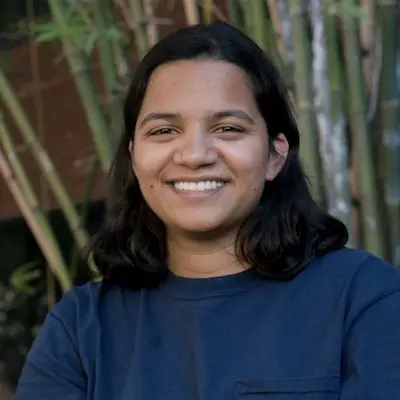
Not All Thinking Helps: Which Reasoning Behaviors Matter Most in Thinking Models
Third Conference on Language Modeling (2026)
Jean de Dieu Nyandwi, Leena Mathur, Yonatan Bisk, Graham Neubig
Jean de Dieu Nyandwi, Leena Mathur, Yonatan Bisk, Graham Neubig
@inproceedings{CoLM:Nyandwi2026,
author = {Jean de Dieu Nyandwi and Leena Mathur and Yonatan Bisk and Graham Neubig},
title = {Not All Thinking Helps: Which Reasoning Behaviors Matter Most in Thinking Models},
booktitle = {Third Conference on Language Modeling},
year = {2026},
url = {},
}
Inductive Generalization for Robotic Manipulation
ArXiv (2026)
Annabella Macaluso, Haochen Zhang, Ishaan Masilamony, Yingshan Chang
Annabella Macaluso, Haochen Zhang, Ishaan Masilamony, Yingshan Chang
@article{ArXiv:Macaluso2026,
author = {Annabella Macaluso and Haochen Zhang and Ishaan Masilamony and Yingshan Chang},
title = {Inductive Generalization for Robotic Manipulation},
journal = {ArXiv},
year = {2026},
url = {https://arxiv.org/abs/2606.20999},
}
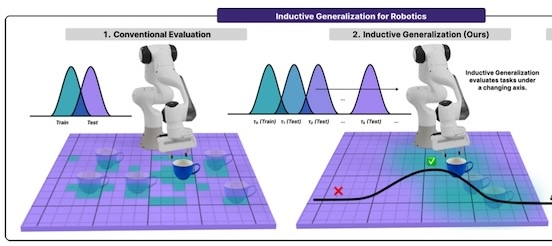
Flatness Preserves Instruction Following in Vision-Language-Action Models
ArXiv (2026)
Haochen Zhang, Yonatan Bisk
Website
Haochen Zhang, Yonatan Bisk
Website
@article{ArXiv:Zhang2026,
author = {Haochen Zhang and Yonatan Bisk},
title = {Flatness Preserves Instruction Following in Vision-Language-Action Models},
journal = {ArXiv},
year = {2026},
url = {https://arxiv.org/abs/2606.23641},
}
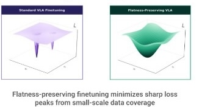
ELASTIC: Efficiently Learning to Adaptively Scale Test-Time Compute for Generative Control Policies
ArXiv (2026)
Andrew Zou Li, Gokul Swamy, Yonatan Bisk, Andrea Bajcsy
Andrew Zou Li, Gokul Swamy, Yonatan Bisk, Andrea Bajcsy
@article{ArXiv:Li2026,
author = {Andrew Zou Li and Gokul Swamy and Yonatan Bisk and Andrea Bajcsy},
title = {ELASTIC: Efficiently Learning to Adaptively Scale Test-Time Compute for Generative Control Policies},
journal = {ArXiv},
year = {2026},
url = {https://arxiv.org/abs/2606.31132},
}
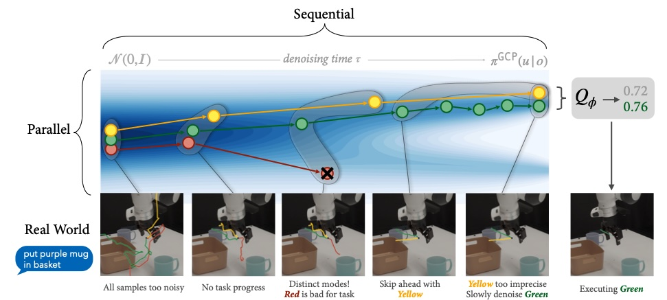
IndoorR2X: Indoor Robot-to-Everything Coordination with LLM-Driven Planning
IEEE/RSJ International Conference on Intelligent Robots and Systems (2026)
Fan Yang, Soumya Teotia, Shaunak A. Mehta, Prajit KrisshnaKumar, Quanting Xie, Jun Liu, Yueqi Song, Wenkai Li, Atsunori Moteki, Kanji Uchino, Yonatan Bisk
Website
Fan Yang, Soumya Teotia, Shaunak A. Mehta, Prajit KrisshnaKumar, Quanting Xie, Jun Liu, Yueqi Song, Wenkai Li, Atsunori Moteki, Kanji Uchino, Yonatan Bisk
Website
@inproceedings{IROS:Yang2026,
author = {Fan Yang and Soumya Teotia and Shaunak A. Mehta and Prajit KrisshnaKumar and Quanting Xie and Jun Liu and Yueqi Song and Wenkai Li and Atsunori Moteki and Kanji Uchino and Yonatan Bisk},
title = {IndoorR2X: Indoor Robot-to-Everything Coordination with LLM-Driven Planning},
booktitle = {IEEE/RSJ International Conference on Intelligent Robots and Systems},
year = {2026},
url = {https://arxiv.org/abs/2603.20182},
}
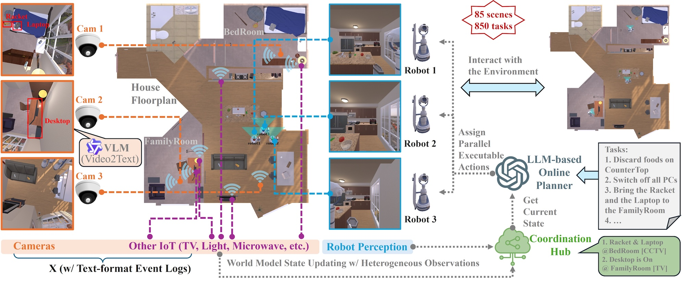
When Should AI Read the Room? Public Perceptions of Social Intelligence in AI Agents
ArXiv (2026)
Leena Mathur, Jenny T. Liang, Vasudha Varadarajan, Jimin Mun, Xuhui Zhou, Jana Schaich Borg, Yonatan Bisk, Louis-Philippe Morency, Maarten Sap
Leena Mathur, Jenny T. Liang, Vasudha Varadarajan, Jimin Mun, Xuhui Zhou, Jana Schaich Borg, Yonatan Bisk, Louis-Philippe Morency, Maarten Sap
@article{ArXiv:Mathur2026,
author = {Leena Mathur and Jenny T. Liang and Vasudha Varadarajan and Jimin Mun and Xuhui Zhou and Jana Schaich Borg and Yonatan Bisk and Louis-Philippe Morency and Maarten Sap},
title = {When Should AI Read the Room? Public Perceptions of Social Intelligence in AI Agents},
journal = {ArXiv},
year = {2026},
url = {https://arxiv.org/abs/2605.29938},
}
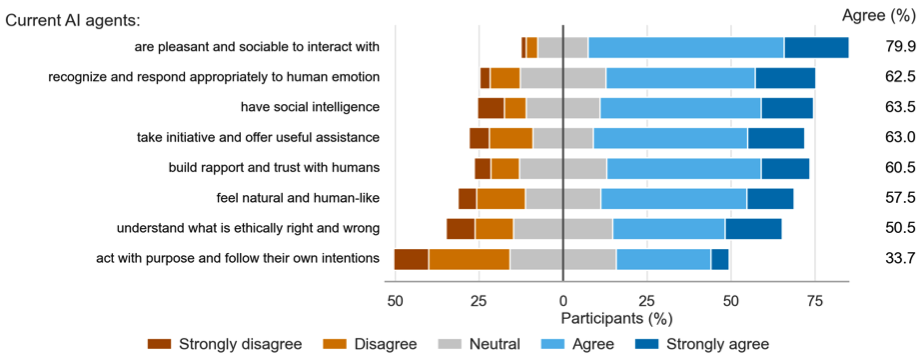
Position: Evaluation of {ML} Resource Utilization Requires Model Life Cycle Assessment
Forty-third International Conference on Machine Learning Position Paper Track (2026)
Jared Fernandez, Clara Na, Yonatan Bisk, Constantine Samaras, Emma Strubell
PDF
Jared Fernandez, Clara Na, Yonatan Bisk, Constantine Samaras, Emma Strubell
@inproceedings{ICML:Fernandez2026,
author = {Jared Fernandez and Clara Na and Yonatan Bisk and Constantine Samaras and Emma Strubell},
title = {Position: Evaluation of {ML} Resource Utilization Requires Model Life Cycle Assessment},
booktitle = {Forty-third International Conference on Machine Learning Position Paper Track},
year = {2026},
url = {https://openreview.net/forum?id=8voi61IiZC},
}
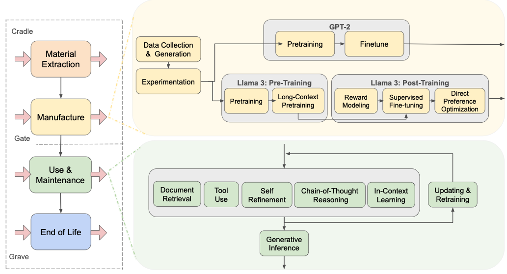
MM-SeR: Multimodal Self-Refinement for Lightweight Image Captioning
Computer Vision and Pattern Recognition Conference (2026)
Junha Song, Yongsik Jo, So Yeon Min, Quanting Xie, Taehwan Kim, Yonatan Bisk, Jaegul Choo
Website
Junha Song, Yongsik Jo, So Yeon Min, Quanting Xie, Taehwan Kim, Yonatan Bisk, Jaegul Choo
Website
@inproceedings{CVPR:Song2026,
author = {Junha Song and Yongsik Jo and So Yeon Min and Quanting Xie and Taehwan Kim and Yonatan Bisk and Jaegul Choo},
title = {MM-SeR: Multimodal Self-Refinement for Lightweight Image Captioning},
booktitle = {Computer Vision and Pattern Recognition Conference},
year = {2026},
url = {https://arxiv.org/abs/2508.21451},
}
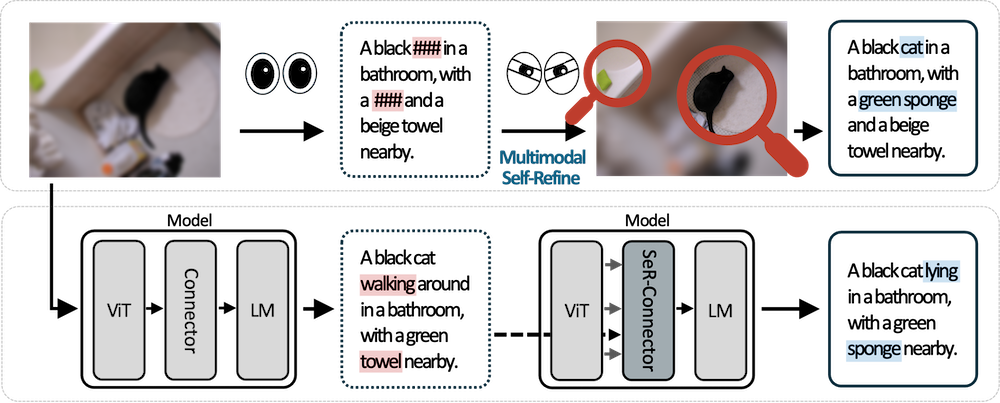
RobotArena $\infty$: Scalable Robot Benchmarking via Real-to-Sim Translation
The Fourteenth International Conference on Learning Representations (2026)
Yash Jangir, Yidi Zhang, Kashu Yamazaki, Chenyu Zhang, Kuan-Hsun Tu, Tsung-Wei Ke, Lei Ke, Yonatan Bisk, Katerina Fragkiadaki
Yash Jangir, Yidi Zhang, Kashu Yamazaki, Chenyu Zhang, Kuan-Hsun Tu, Tsung-Wei Ke, Lei Ke, Yonatan Bisk, Katerina Fragkiadaki
@inproceedings{ICLR:Jangir2026,
author = {Yash Jangir and Yidi Zhang and Kashu Yamazaki and Chenyu Zhang and Kuan-Hsun Tu and Tsung-Wei Ke and Lei Ke and Yonatan Bisk and Katerina Fragkiadaki},
title = {RobotArena $\infty$: Scalable Robot Benchmarking via Real-to-Sim Translation},
booktitle = {The Fourteenth International Conference on Learning Representations},
year = {2026},
url = {https://arxiv.org/abs/2510.23571},
}
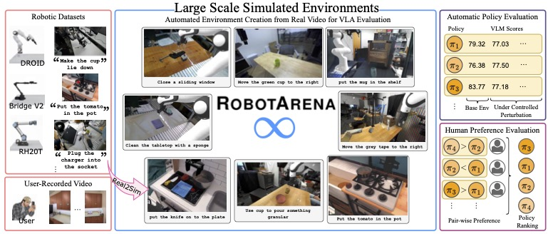
Unsupervised Discovery of Long-Term Spatiotemporal Periodic Workflows in Human Activities
The Winter Conference on Applications of Computer Vision (2026)
Fan Yang, Quanting Xie, Atsunori Moteki, Shoichi Masui, Shan Jiang, Kanji Uchino, Yonatan Bisk, Graham Neubig
Fan Yang, Quanting Xie, Atsunori Moteki, Shoichi Masui, Shan Jiang, Kanji Uchino, Yonatan Bisk, Graham Neubig
@inproceedings{WACV:Yang2026,
author = {Fan Yang and Quanting Xie and Atsunori Moteki and Shoichi Masui and Shan Jiang and Kanji Uchino and Yonatan Bisk and Graham Neubig},
title = {Unsupervised Discovery of Long-Term Spatiotemporal Periodic Workflows in Human Activities},
booktitle = {The Winter Conference on Applications of Computer Vision},
year = {2026},
url = {https://arxiv.org/abs/2511.14945},
}
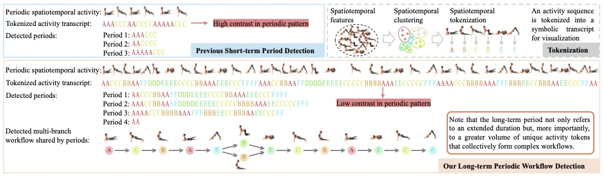
RAVEN: Resilient Aerial Navigation via Open-Set Semantic Memory and Behavior Adaptation
2026 IEEE International Conference on Robotics and Automation (ICRA) (2026)
Seungchan Kim, Omar Alama, Dmytro Kurdydyk, John Keller, Nikhil Keetha, Wenshan Wang, Yonatan Bisk, Sebastian Scherer
Seungchan Kim, Omar Alama, Dmytro Kurdydyk, John Keller, Nikhil Keetha, Wenshan Wang, Yonatan Bisk, Sebastian Scherer
@inproceedings{ICRA:Kim2026,
author = {Seungchan Kim and Omar Alama and Dmytro Kurdydyk and John Keller and Nikhil Keetha and Wenshan Wang and Yonatan Bisk and Sebastian Scherer},
title = {RAVEN: Resilient Aerial Navigation via Open-Set Semantic Memory and Behavior Adaptation},
booktitle = {2026 IEEE International Conference on Robotics and Automation (ICRA)},
year = {2026},
url = {https://arxiv.org/abs/2509.23563},
}
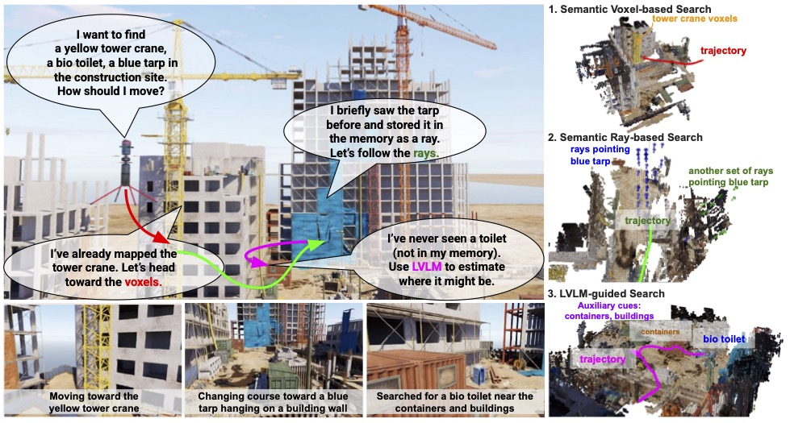
FieldWorkArena: Agentic AI Benchmark for Real Field Work Tasks
International Conference on Pattern Recognition (2026)
Atsunori Moteki, Shoichi Masui, Fan Yang, Yueqi Song, Yonatan Bisk, Graham Neubig, Ikuo Kusajima, Yasuto Watanabe, Hiroyuki Ishida, Jun Takahashi, Shan Jiang
Atsunori Moteki, Shoichi Masui, Fan Yang, Yueqi Song, Yonatan Bisk, Graham Neubig, Ikuo Kusajima, Yasuto Watanabe, Hiroyuki Ishida, Jun Takahashi, Shan Jiang
@inproceedings{ICPR:Moteki2026,
author = {Atsunori Moteki and Shoichi Masui and Fan Yang and Yueqi Song and Yonatan Bisk and Graham Neubig and Ikuo Kusajima and Yasuto Watanabe and Hiroyuki Ishida and Jun Takahashi and Shan Jiang},
title = {FieldWorkArena: Agentic AI Benchmark for Real Field Work Tasks},
booktitle = {International Conference on Pattern Recognition},
year = {2026},
url = {https://arxiv.org/abs/2505.19662},
}
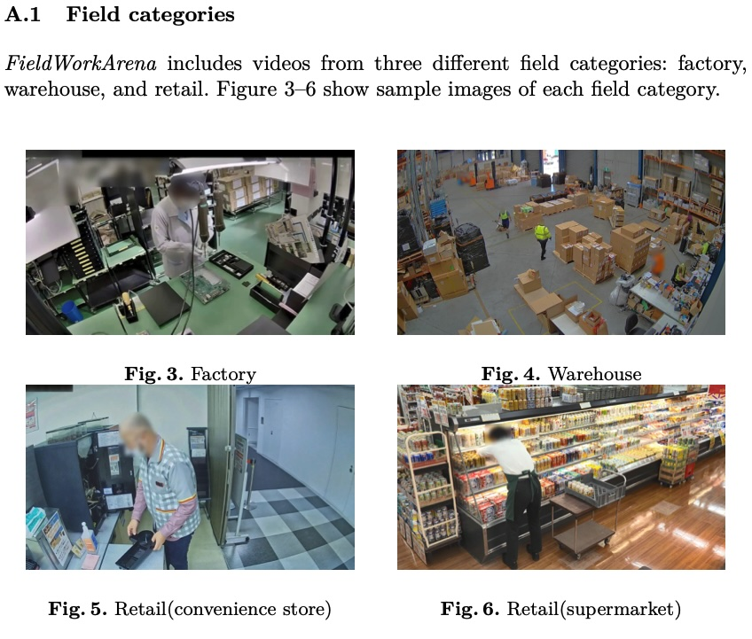
Bridging Language and Action: A Survey of Language-Conditioned Robot Manipulation
International Journal of Robotics Research (2026)
Xiangtong Yao, Hongkuan Zhou, Oier Mees, Yuan Meng, Ted Xiao, Yonatan Bisk, Jean Oh, Edward Johns, Mohit Shridhar, Dhruv Shah, Jesse Thomason, Kai Huang, Joyce Chai, Zhenshan Bing, Alois Knoll"
Xiangtong Yao, Hongkuan Zhou, Oier Mees, Yuan Meng, Ted Xiao, Yonatan Bisk, Jean Oh, Edward Johns, Mohit Shridhar, Dhruv Shah, Jesse Thomason, Kai Huang, Joyce Chai, Zhenshan Bing, Alois Knoll"
@article{IJRR:Yao2026,
author = {Xiangtong Yao and Hongkuan Zhou and Oier Mees and Yuan Meng and Ted Xiao and Yonatan Bisk and Jean Oh and Edward Johns and Mohit Shridhar and Dhruv Shah and Jesse Thomason and Kai Huang and Joyce Chai and Zhenshan Bing and Alois Knoll"},
title = {Bridging Language and Action: A Survey of Language-Conditioned Robot Manipulation},
journal = {International Journal of Robotics Research},
year = {2026},
url = {https://arxiv.org/abs/2312.10807},
}
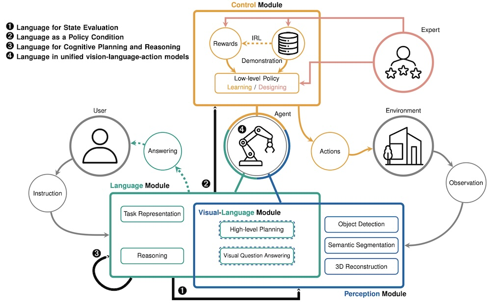
2025
Affordance RAG: Hierarchical Multimodal Retrieval with Affordance-Aware Embodied Memory for Mobile Manipulation
IEEE Robotics and Automation Letters (2025)
Ryosuke Korekata, Quanting Xie, Yonatan Bisk, Komei Sugiura
Ryosuke Korekata, Quanting Xie, Yonatan Bisk, Komei Sugiura
@article{RA-L:Korekata2025,
author = {Ryosuke Korekata and Quanting Xie and Yonatan Bisk and Komei Sugiura},
title = {Affordance RAG: Hierarchical Multimodal Retrieval with Affordance-Aware Embodied Memory for Mobile Manipulation},
journal = {IEEE Robotics and Automation Letters},
year = {2025},
url = {https://arxiv.org/abs/2512.18987},
}
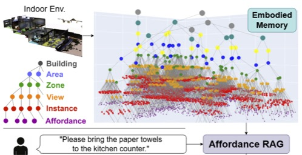
REM: Evaluating LLM Embodied Spatial Reasoning through Multi-Frame Trajectories
Second Conference on Language Modeling (2025)
Jacob Thompson, Emiliano Garcia-Lopez, Yonatan Bisk
PDF
Jacob Thompson, Emiliano Garcia-Lopez, Yonatan Bisk
@inproceedings{CoLM:Thompson2025,
author = {Jacob Thompson and Emiliano Garcia-Lopez and Yonatan Bisk},
title = {REM: Evaluating LLM Embodied Spatial Reasoning through Multi-Frame Trajectories},
booktitle = {Second Conference on Language Modeling},
year = {2025},
url = {https://openreview.net/forum?id=qbWpEufkqk},
}
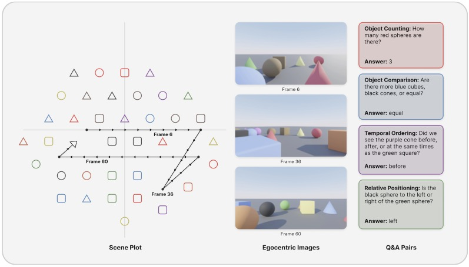
MolErr2Fix: Benchmarking LLM Trustworthiness in Chemistry via Modular Error Detection, Localization, Explanation, and Correction
Conference on Empirical Methods in Natural Language Processing (2025)
Yuyang Wu, Jinhui Ye, Shuhao Zhang, Lu Dai, Yonatan Bisk, Olexandr Isayev
Yuyang Wu, Jinhui Ye, Shuhao Zhang, Lu Dai, Yonatan Bisk, Olexandr Isayev
@inproceedings{EMNLP:Wu2025,
author = {Yuyang Wu and Jinhui Ye and Shuhao Zhang and Lu Dai and Yonatan Bisk and Olexandr Isayev},
title = {MolErr2Fix: Benchmarking LLM Trustworthiness in Chemistry via Modular Error Detection, Localization, Explanation, and Correction},
booktitle = {Conference on Empirical Methods in Natural Language Processing},
year = {2025},
url = {https://arxiv.org/abs/2509.00063},
}
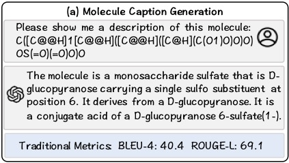
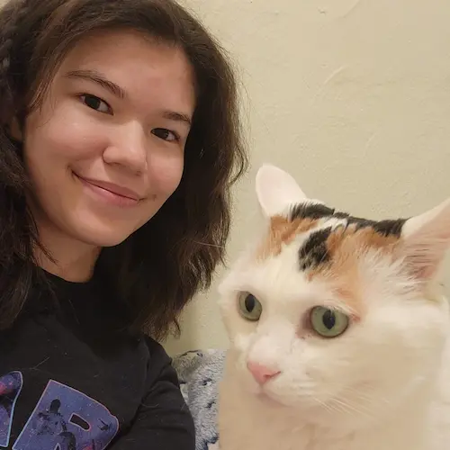
Position: You Can't Manufacture a NeRF
Forty-second International Conference on Machine Learning Position Paper Track (2025)
Ani Kimmel, Mueed Ur Rehman, Yonatan Bisk, Gary K. Fedder
PDF
Ani Kimmel, Mueed Ur Rehman, Yonatan Bisk, Gary K. Fedder
@inproceedings{ICML:Kimmel2025,
author = {Ani Kimmel and Mueed Ur Rehman and Yonatan Bisk and Gary K. Fedder},
title = {Position: You Can't Manufacture a NeRF},
booktitle = {Forty-second International Conference on Machine Learning Position Paper Track},
year = {2025},
url = {https://openreview.net/forum?id=kJzB6lQmcb},
}
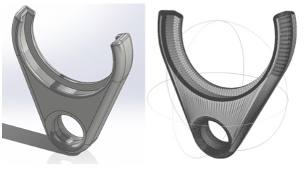
Looking beyond the next token
ArXiv (2025)
Abitha Thankaraj, Yiding Jiang, J. Zico Kolter, Yonatan Bisk
Abitha Thankaraj, Yiding Jiang, J. Zico Kolter, Yonatan Bisk
@article{ArXiv:Thankaraj2025,
author = {Abitha Thankaraj and Yiding Jiang and J. Zico Kolter and Yonatan Bisk},
title = {Looking beyond the next token},
journal = {ArXiv},
year = {2025},
url = {https://arxiv.org/abs/2504.11336},
}
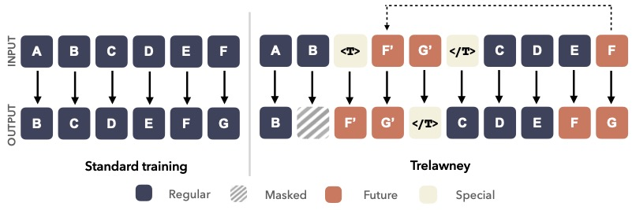
Model Successor Functions
ArXiv (2025)
Yingshan Chang, Yonatan Bisk
Yingshan Chang, Yonatan Bisk
@article{ArXiv:Chang2025,
author = {Yingshan Chang and Yonatan Bisk},
title = {Model Successor Functions},
journal = {ArXiv},
year = {2025},
url = {https://arxiv.org/abs/2502.00197},
}
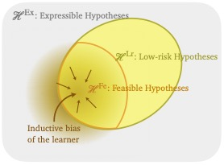
Casper: Inferring Diverse Intents for Assistive Teleoperation with Vision Language Models
Conference on Robot Learning (2025)
Huihan Liu, Rutav Shah, Shuijing Liu, Jack Pittenger, Mingyo Seo, Yuchen Cui, Yonatan Bisk, Roberto Martín-Martín, Yuke Zhu
Huihan Liu, Rutav Shah, Shuijing Liu, Jack Pittenger, Mingyo Seo, Yuchen Cui, Yonatan Bisk, Roberto Martín-Martín, Yuke Zhu
@inproceedings{CoRL:Liu2025,
author = {Huihan Liu and Rutav Shah and Shuijing Liu and Jack Pittenger and Mingyo Seo and Yuchen Cui and Yonatan Bisk and Roberto Martín-Martín and Yuke Zhu},
title = {Casper: Inferring Diverse Intents for Assistive Teleoperation with Vision Language Models},
booktitle = {Conference on Robot Learning},
year = {2025},
url = {https://arxiv.org/abs/2506.14727},
}
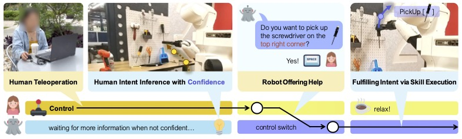
Energy Considerations of Large Language Model Inference and Efficiency Optimizations
The 63rd Annual Meeting of the Association for Computational Linguistics (2025)
Jared Fernandez, Clara Na, Vashisth Tiwari, Yonatan Bisk, Sasha Luccioni, Emma Strubell
Jared Fernandez, Clara Na, Vashisth Tiwari, Yonatan Bisk, Sasha Luccioni, Emma Strubell
@inproceedings{ACL:Fernandez2025,
author = {Jared Fernandez and Clara Na and Vashisth Tiwari and Yonatan Bisk and Sasha Luccioni and Emma Strubell},
title = {Energy Considerations of Large Language Model Inference and Efficiency Optimizations},
booktitle = {The 63rd Annual Meeting of the Association for Computational Linguistics},
year = {2025},
url = {https://arxiv.org/abs/2504.17674},
}
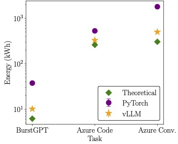
Self-Regulation and Requesting Interventions
ArXiv (2025)
So Yeon Min, Yue Wu, Jimin Sun, Max Kaufmann, Fahim Tajwar, Yonatan Bisk, Ruslan Salakhutdinov
So Yeon Min, Yue Wu, Jimin Sun, Max Kaufmann, Fahim Tajwar, Yonatan Bisk, Ruslan Salakhutdinov
@article{ArXiv:Min2025,
author = {So Yeon Min and Yue Wu and Jimin Sun and Max Kaufmann and Fahim Tajwar and Yonatan Bisk and Ruslan Salakhutdinov},
title = {Self-Regulation and Requesting Interventions},
journal = {ArXiv},
year = {2025},
url = {https://arxiv.org/abs/2502.04576},
}
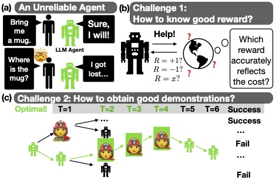
Re-thinking Temporal Search for Long-Form Video Understanding
The IEEE/CVF Conference on Computer Vision and Pattern Recognition (2025)
Jinhui Ye, Zihan Wang, Haosen Sun, Keshigeyan Chandrasegaran, Zane Durante, Cristobal Eyzaguirre, Yonatan Bisk, Juan Carlos Niebles, Ehsan Adeli, Li Fei-Fei, Jiajun Wu, Manling Li
Jinhui Ye, Zihan Wang, Haosen Sun, Keshigeyan Chandrasegaran, Zane Durante, Cristobal Eyzaguirre, Yonatan Bisk, Juan Carlos Niebles, Ehsan Adeli, Li Fei-Fei, Jiajun Wu, Manling Li
@inproceedings{CVPR:Ye2025,
author = {Jinhui Ye and Zihan Wang and Haosen Sun and Keshigeyan Chandrasegaran and Zane Durante and Cristobal Eyzaguirre and Yonatan Bisk and Juan Carlos Niebles and Ehsan Adeli and Li Fei-Fei and Jiajun Wu and Manling Li},
title = {Re-thinking Temporal Search for Long-Form Video Understanding},
booktitle = {The IEEE/CVF Conference on Computer Vision and Pattern Recognition},
year = {2025},
url = {https://arxiv.org/abs/2504.02259},
}
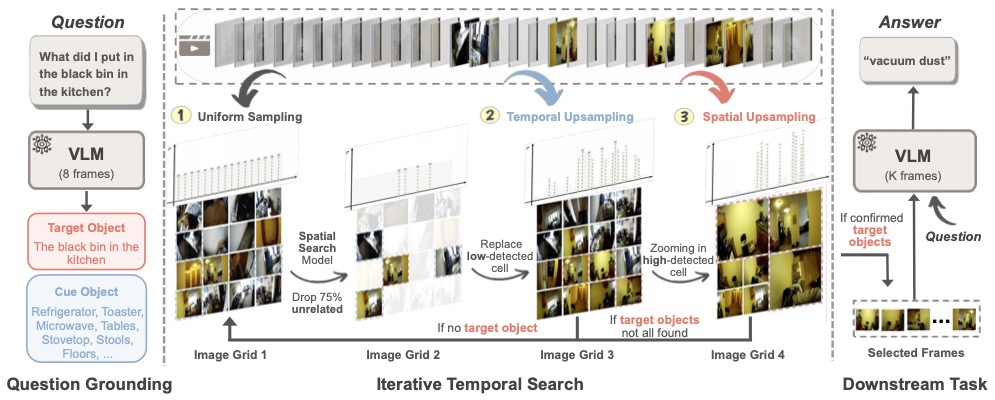
Explore Theory-of-Mind: Program-Guided Adversarial Data Generation for Theory of Mind Reasoning
The Thirteenth International Conference on Learning Representations (2025)
Melanie Sclar, Jane Yu, Maryam Fazel-Zarandi, Yulia Tsvetkov, Yonatan Bisk, Yejin Choi, Asli Celikyilmaz
Meta
Melanie Sclar, Jane Yu, Maryam Fazel-Zarandi, Yulia Tsvetkov, Yonatan Bisk, Yejin Choi, Asli Celikyilmaz
Meta
@inproceedings{ICLR:Sclar2025,
author = {Melanie Sclar and Jane Yu and Maryam Fazel-Zarandi and Yulia Tsvetkov and Yonatan Bisk and Yejin Choi and Asli Celikyilmaz},
title = {Explore Theory-of-Mind: Program-Guided Adversarial Data Generation for Theory of Mind Reasoning},
booktitle = {The Thirteenth International Conference on Learning Representations},
year = {2025},
url = {https://arxiv.org/abs/2412.12175},
}
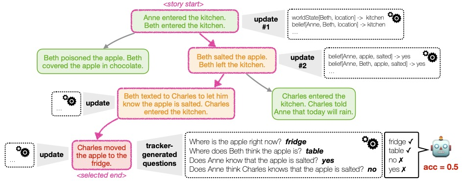
Efficient Hardware Scaling and Diminishing Returns in Large-Scale Training of Language Models
Transactions on Machine Learning Research (2025)
Jared Fernandez, Luca Wehrstedt, Leonid Shamis, Mostafa Elhoushi, Kalyan Saladi, Yonatan Bisk, Emma Strubell, Jacob Kahn
Jared Fernandez, Luca Wehrstedt, Leonid Shamis, Mostafa Elhoushi, Kalyan Saladi, Yonatan Bisk, Emma Strubell, Jacob Kahn
@article{TMLR:Fernandez2025,
author = {Jared Fernandez and Luca Wehrstedt and Leonid Shamis and Mostafa Elhoushi and Kalyan Saladi and Yonatan Bisk and Emma Strubell and Jacob Kahn},
title = {Efficient Hardware Scaling and Diminishing Returns in Large-Scale Training of Language Models},
journal = {Transactions on Machine Learning Research},
year = {2025},
url = {https://arxiv.org/abs/2411.13055},
}
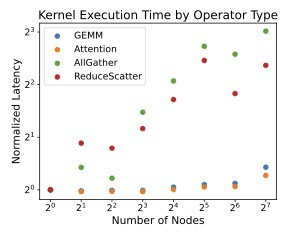
MotIF: Motion Instruction Fine-tuning
IEEE Robotics and Automation Letters (2025)
Minyoung Hwang, Joey Hejna, Dorsa Sadigh, Yonatan Bisk
Website
Minyoung Hwang, Joey Hejna, Dorsa Sadigh, Yonatan Bisk
Website
@article{RA-L:Hwang2025,
author = {Minyoung Hwang and Joey Hejna and Dorsa Sadigh and Yonatan Bisk},
title = {MotIF: Motion Instruction Fine-tuning},
journal = {IEEE Robotics and Automation Letters},
year = {2025},
url = {https://arxiv.org/abs/2409.10683},
}
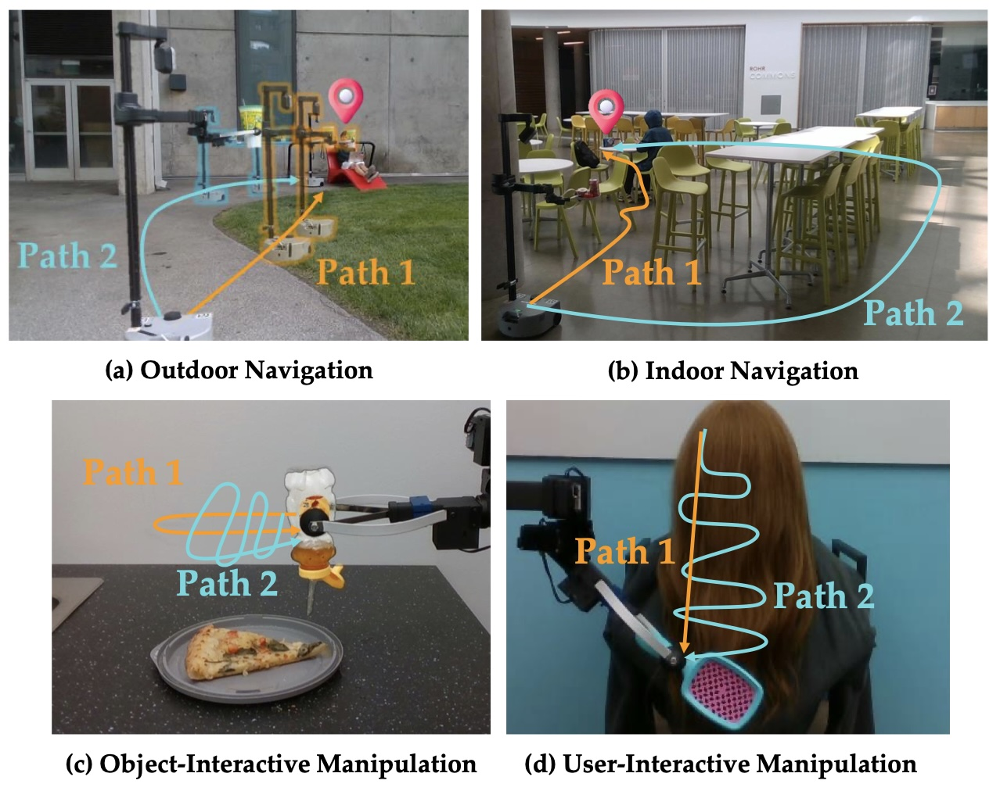
Language Models Need Inductive Biases to Count Inductively
The Thirteenth International Conference on Learning Representations (2025)
Yingshan Chang, Yonatan Bisk
Yingshan Chang, Yonatan Bisk
@inproceedings{ICLR:Chang2025,
author = {Yingshan Chang and Yonatan Bisk},
title = {Language Models Need Inductive Biases to Count Inductively},
booktitle = {The Thirteenth International Conference on Learning Representations},
year = {2025},
url = {https://arxiv.org/abs/2405.20131},
}
Direct Preference Optimization of Video Large Multimodal Models from Language Model Reward
Annual Conference of the Nations of the Americas Chapter of the ACL (2025)
Ruohong Zhang, Liangke Gui, Zhiqing Sun, Yihao Feng, Keyang Xu, Yuanhan Zhang, Di Fu, Chunyuan Li, Alexander Hauptmann, Yonatan Bisk, Yiming Yang
GitHub
Ruohong Zhang, Liangke Gui, Zhiqing Sun, Yihao Feng, Keyang Xu, Yuanhan Zhang, Di Fu, Chunyuan Li, Alexander Hauptmann, Yonatan Bisk, Yiming Yang
GitHub
@inproceedings{NAACL:Zhang2025,
author = {Ruohong Zhang and Liangke Gui and Zhiqing Sun and Yihao Feng and Keyang Xu and Yuanhan Zhang and Di Fu and Chunyuan Li and Alexander Hauptmann and Yonatan Bisk and Yiming Yang},
title = {Direct Preference Optimization of Video Large Multimodal Models from Language Model Reward},
booktitle = {Annual Conference of the Nations of the Americas Chapter of the ACL},
year = {2025},
url = {https://arxiv.org/abs/2404.01258},
}
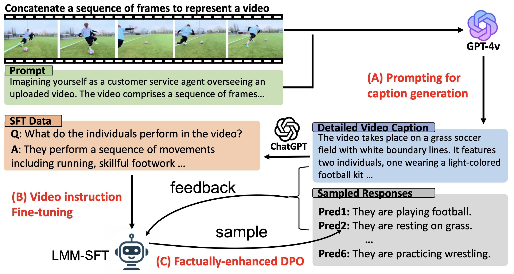
2024
Embodied-RAG: General non-parametric Embodied Memory for Retrieval and Generation
ArXiv (2024)
Quanting Xie, So Yeon Min, Tianyi Zhang, Aarav Bajaj, Ruslan Salakhutdinov, Matthew Johnson-Roberson, Yonatan Bisk
Website
Quanting Xie, So Yeon Min, Tianyi Zhang, Aarav Bajaj, Ruslan Salakhutdinov, Matthew Johnson-Roberson, Yonatan Bisk
Website
@article{ArXiv:Xie2024,
author = {Quanting Xie and So Yeon Min and Tianyi Zhang and Aarav Bajaj and Ruslan Salakhutdinov and Matthew Johnson-Roberson and Yonatan Bisk},
title = {Embodied-RAG: General non-parametric Embodied Memory for Retrieval and Generation},
journal = {ArXiv},
year = {2024},
url = {https://arxiv.org/abs/2409.18313},
}
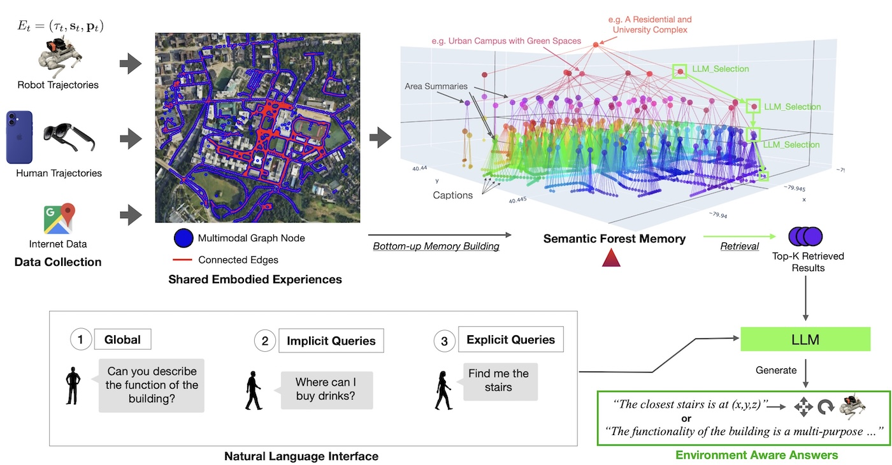
ANAVI: Audio Noise Awareness using Visuals of Indoor environments for NAVIgation
Conference on Robot Learning (2024)
Vidhi Jain, Rishi Veerapaneni, Yonatan Bisk
Website
Vidhi Jain, Rishi Veerapaneni, Yonatan Bisk
Website
@inproceedings{CoRL:Jain2024,
author = {Vidhi Jain and Rishi Veerapaneni and Yonatan Bisk},
title = {ANAVI: Audio Noise Awareness using Visuals of Indoor environments for NAVIgation},
booktitle = {Conference on Robot Learning},
year = {2024},
url = {https://arxiv.org/abs/2410.18932},
}
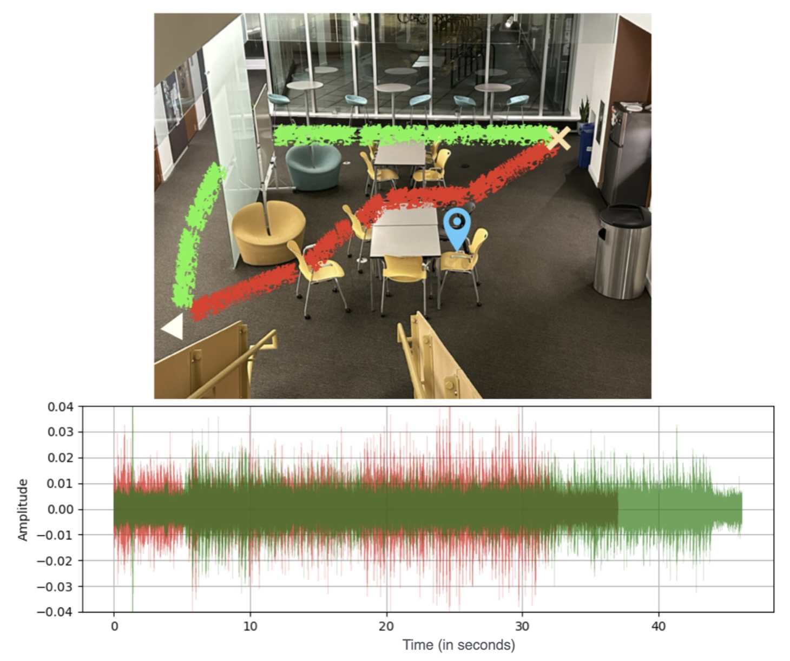
Situated Instruction Following
European Conference on Computer Vision (2024)
So Yeon Min, Xavi Puig, Devendra Singh Chaplot, Tsung-Yen Yang, Akshara Rai, Priyam Parashar, Ruslan Salakhutdinov, Yonatan Bisk, Roozbeh Mottaghi
Website
So Yeon Min, Xavi Puig, Devendra Singh Chaplot, Tsung-Yen Yang, Akshara Rai, Priyam Parashar, Ruslan Salakhutdinov, Yonatan Bisk, Roozbeh Mottaghi
Website
@inproceedings{ECCV:Min2024,
author = {So Yeon Min and Xavi Puig and Devendra Singh Chaplot and Tsung-Yen Yang and Akshara Rai and Priyam Parashar and Ruslan Salakhutdinov and Yonatan Bisk and Roozbeh Mottaghi},
title = {Situated Instruction Following},
booktitle = {European Conference on Computer Vision},
year = {2024},
url = {https://arxiv.org/abs/2407.12061},
}
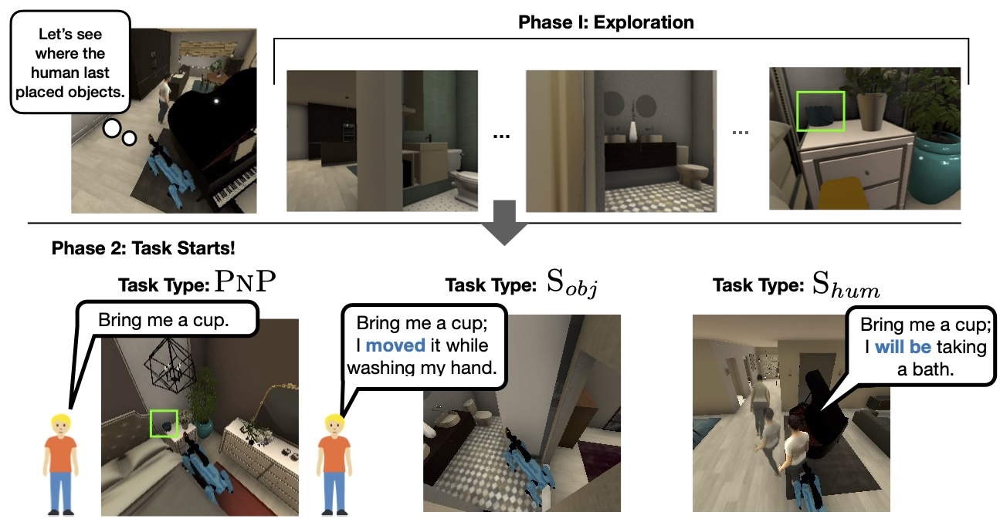
Gradient Localization Improves Lifelong Pretraining of Language Models
Findings of the Conference on Empirical Methods in Natural Language Processing (2024)
Jared Fernandez, Yonatan Bisk, Emma Strubell
Jared Fernandez, Yonatan Bisk, Emma Strubell
@inproceedings{EMNLP-Findings:Fernandez2024,
author = {Jared Fernandez and Yonatan Bisk and Emma Strubell},
title = {Gradient Localization Improves Lifelong Pretraining of Language Models},
booktitle = {Findings of the Conference on Empirical Methods in Natural Language Processing},
year = {2024},
url = {https://arxiv.org/abs/2411.04448},
}
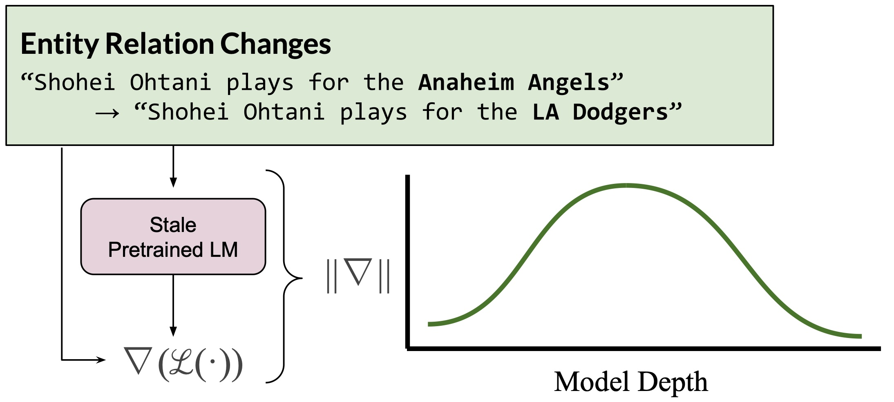
How to Train Your Fact Verifier: Knowledge Transfer with Multimodal Open Models
Findings of the Conference on Empirical Methods in Natural Language Processing (2024)
Jaeyoung Lee, Ximing Lu, Jack Hessel, Faeze Brahman, Youngjae Yu, Yonatan Bisk, Yejin Choi, Saadia Gabriel
Jaeyoung Lee, Ximing Lu, Jack Hessel, Faeze Brahman, Youngjae Yu, Yonatan Bisk, Yejin Choi, Saadia Gabriel
@inproceedings{EMNLP-Findings:Lee2024,
author = {Jaeyoung Lee and Ximing Lu and Jack Hessel and Faeze Brahman and Youngjae Yu and Yonatan Bisk and Yejin Choi and Saadia Gabriel},
title = {How to Train Your Fact Verifier: Knowledge Transfer with Multimodal Open Models},
booktitle = {Findings of the Conference on Empirical Methods in Natural Language Processing },
year = {2024},
url = {https://arxiv.org/abs/2407.00369},
}
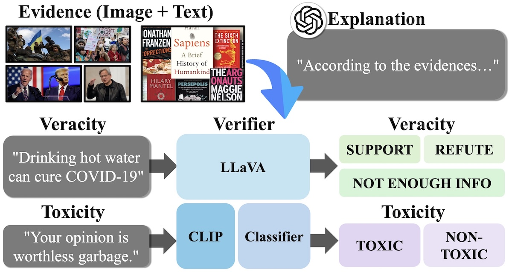
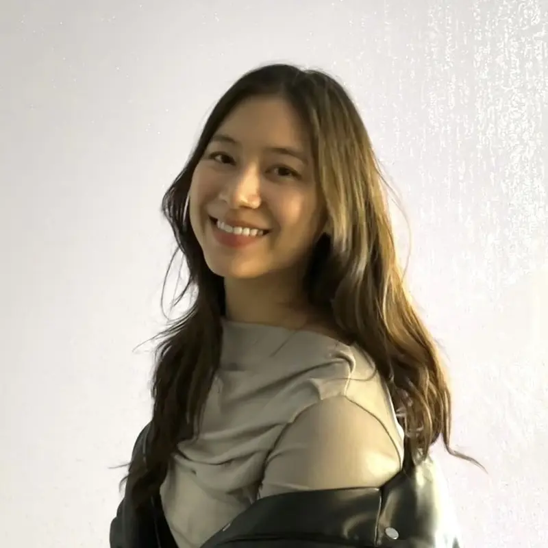
Tools Fail: Detecting Silent Errors in Faulty Tools
Conference on Empirical Methods in Natural Language Processing (2024)
Jimin Sun, So Yeon Min, Yingshan Chang, Yonatan Bisk
Jimin Sun, So Yeon Min, Yingshan Chang, Yonatan Bisk
@inproceedings{EMNLP:Sun2024,
author = {Jimin Sun and So Yeon Min and Yingshan Chang and Yonatan Bisk},
title = {Tools Fail: Detecting Silent Errors in Faulty Tools},
booktitle = {Conference on Empirical Methods in Natural Language Processing },
year = {2024},
url = {https://arxiv.org/abs/2406.19228},
}
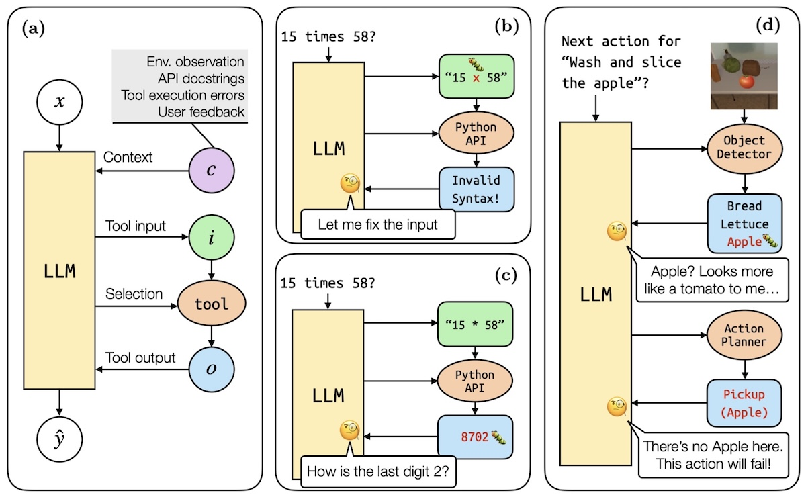
DegustaBot: Zero-Shot Visual Preference Estimation for Personalized Multi-Object Rearrangement
ArXiv (2024)
Benjamin A. Newman, Pranay Gupta, Kris Kitani, Yonatan Bisk, Henny Admoni, Chris Paxton
Benjamin A. Newman, Pranay Gupta, Kris Kitani, Yonatan Bisk, Henny Admoni, Chris Paxton
@article{ArXiv:Newman2024,
author = {Benjamin A. Newman and Pranay Gupta and Kris Kitani and Yonatan Bisk and Henny Admoni and Chris Paxton},
title = {DegustaBot: Zero-Shot Visual Preference Estimation for Personalized Multi-Object Rearrangement},
journal = {ArXiv},
year = {2024},
url = {https://arxiv.org/abs/2407.08876},
}
DiffusionPID: Interpreting Diffusion via Partial Information Decomposition
Thirty-Eighth Annual Conference on Neural Information Processing Systems (2024)
Shaurya Dewan, Rushikesh Zawar, Prakanshul Saxena, Yingshan Chang, Andrew Luo, Yonatan Bisk
Shaurya Dewan, Rushikesh Zawar, Prakanshul Saxena, Yingshan Chang, Andrew Luo, Yonatan Bisk
@inproceedings{NeurIPS:Dewan2024,
author = {Shaurya Dewan and Rushikesh Zawar and Prakanshul Saxena and Yingshan Chang and Andrew Luo and Yonatan Bisk},
title = {DiffusionPID: Interpreting Diffusion via Partial Information Decomposition},
booktitle = {Thirty-Eighth Annual Conference on Neural Information Processing Systems},
year = {2024},
url = {https://arxiv.org/abs/2406.05191},
}
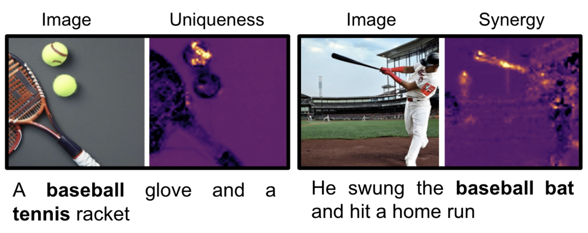
Dialogue with Robots: Proposals for Broadening Participation and Research in the SLIVAR Community
ArXiv (2024)
Casey Kennington, Malihe Alikhani, Heather Pon-Barry, Katherine Atwell, Yonatan Bisk, Daniel Fried, Felix Gervits, Zhao Han, Mert Inan, Michael Johnston, Raj Korpan, Diane Litman, Matthew Marge, Cynthia Matuszek, Ross Mead, Shiwali Mohan, Raymond Mooney, Natalie Parde, Jivko Sinapov, Angela Stewart, Matthew Stone, Stefanie Tellex, Tom Williams
Casey Kennington, Malihe Alikhani, Heather Pon-Barry, Katherine Atwell, Yonatan Bisk, Daniel Fried, Felix Gervits, Zhao Han, Mert Inan, Michael Johnston, Raj Korpan, Diane Litman, Matthew Marge, Cynthia Matuszek, Ross Mead, Shiwali Mohan, Raymond Mooney, Natalie Parde, Jivko Sinapov, Angela Stewart, Matthew Stone, Stefanie Tellex, Tom Williams
@article{ArXiv:Kennington2024,
author = {Casey Kennington and Malihe Alikhani and Heather Pon-Barry and Katherine Atwell and Yonatan Bisk and Daniel Fried and Felix Gervits and Zhao Han and Mert Inan and Michael Johnston and Raj Korpan and Diane Litman and Matthew Marge and Cynthia Matuszek and Ross Mead and Shiwali Mohan and Raymond Mooney and Natalie Parde and Jivko Sinapov and Angela Stewart and Matthew Stone and Stefanie Tellex and Tom Williams},
title = {Dialogue with Robots: Proposals for Broadening Participation and Research in the SLIVAR Community},
journal = {ArXiv},
year = {2024},
url = {https://arxiv.org/abs/2404.01158},
}
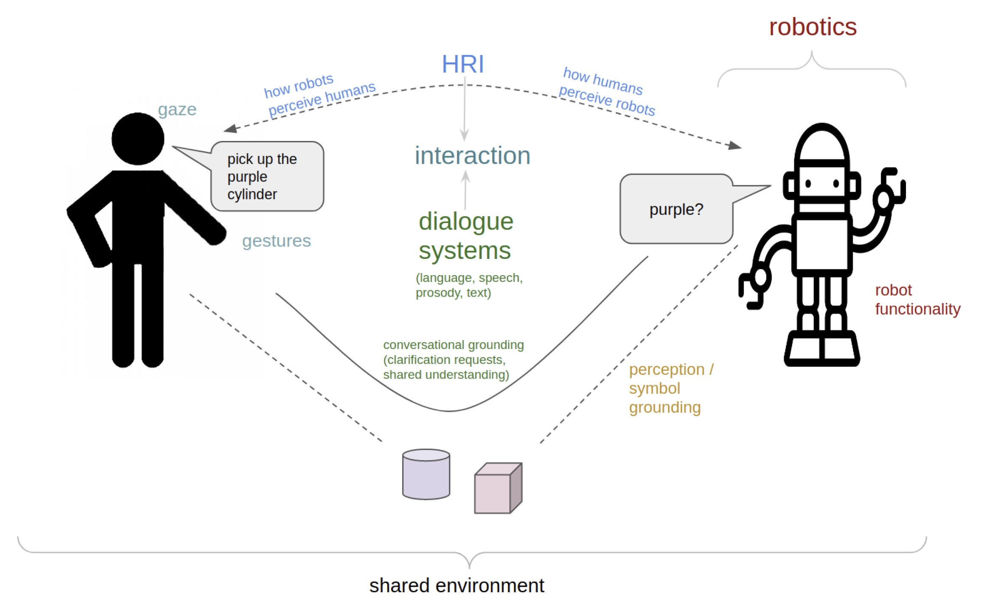
VISREAS: Complex Visual Reasoning with Unanswerable Questions
Findings of the 62nd Annual Meeting of the Association for Computational Linguistics (2024)
Syeda Nahida Akter, Sangwu Lee, Yingshan Chang, Yonatan Bisk, Eric Nyberg
Syeda Nahida Akter, Sangwu Lee, Yingshan Chang, Yonatan Bisk, Eric Nyberg
@inproceedings{ACL-Findings:Akter2024,
author = {Syeda Nahida Akter and Sangwu Lee and Yingshan Chang and Yonatan Bisk and Eric Nyberg},
title = {VISREAS: Complex Visual Reasoning with Unanswerable Questions},
booktitle = {Findings of the 62nd Annual Meeting of the Association for Computational Linguistics},
year = {2024},
url = {https://arxiv.org/abs/2403.10534},
}
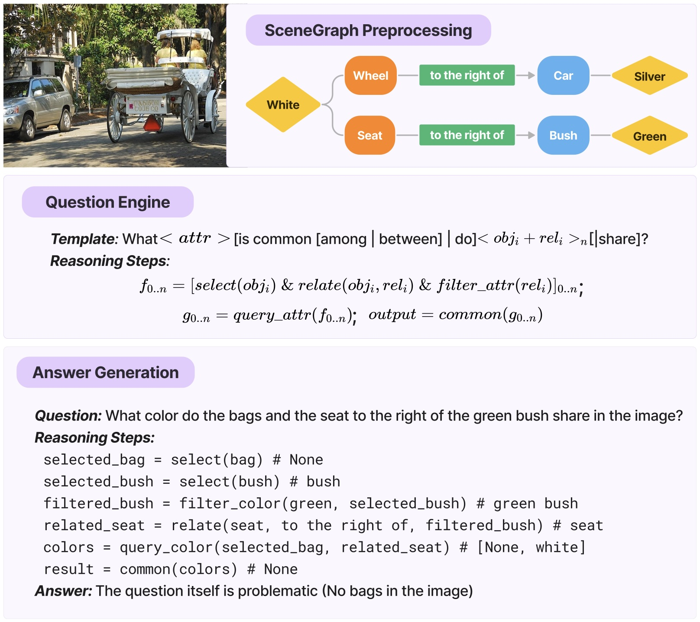
AgentKit: Flow Engineering with Graphs, not Coding
Conference on Language Modeling (2024)
Yue Wu, Yewen Fan, So Yeon Min, Shrimai Prabhumoye, Stephen McAleer, Yonatan Bisk, Ruslan Salakhutdinov, Yuanzhi Li, Tom Mitchell
GitHub
Yue Wu, Yewen Fan, So Yeon Min, Shrimai Prabhumoye, Stephen McAleer, Yonatan Bisk, Ruslan Salakhutdinov, Yuanzhi Li, Tom Mitchell
GitHub
@inproceedings{COLM:Wu2024,
author = {Yue Wu and Yewen Fan and So Yeon Min and Shrimai Prabhumoye and Stephen McAleer and Yonatan Bisk and Ruslan Salakhutdinov and Yuanzhi Li and Tom Mitchell},
title = {AgentKit: Flow Engineering with Graphs, not Coding},
booktitle = {Conference on Language Modeling},
year = {2024},
url = {https://arxiv.org/abs/2404.11483},
}
Skews in the Phenomenon Space Hinder Generalization in Text-to-Image Generation
European Conference on Computer Vision (2024)
Yingshan Chang, Yasi Zhang, Zhiyuan Fang, Yingnian Wu, Yonatan Bisk, Feng Gao
Yingshan Chang, Yasi Zhang, Zhiyuan Fang, Yingnian Wu, Yonatan Bisk, Feng Gao
@inproceedings{ECCV:Chang2024,
author = {Yingshan Chang and Yasi Zhang and Zhiyuan Fang and Yingnian Wu and Yonatan Bisk and Feng Gao},
title = {Skews in the Phenomenon Space Hinder Generalization in Text-to-Image Generation},
booktitle = {European Conference on Computer Vision},
year = {2024},
url = {https://arxiv.org/abs/2403.16394},
}
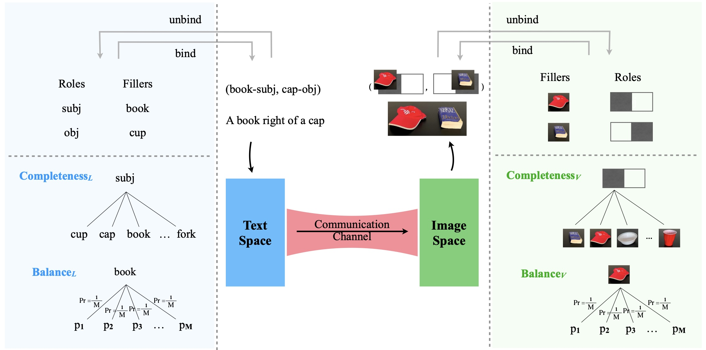
Vid2Robot: End-to-end Video-conditioned Policy Learning with Cross-Attention Transformers
Robotics: Science and Systems (2024)
Vidhi Jain, Maria Attarian, Nikhil J Joshi, Ayzaan Wahid, Danny Driess, Quan Vuong, Pannag R Sanketi, Pierre Sermanet, Stefan Welker, Christine Chan, Igor Gilitschenski, Yonatan Bisk, Debidatta Dwibedi
Website
Vidhi Jain, Maria Attarian, Nikhil J Joshi, Ayzaan Wahid, Danny Driess, Quan Vuong, Pannag R Sanketi, Pierre Sermanet, Stefan Welker, Christine Chan, Igor Gilitschenski, Yonatan Bisk, Debidatta Dwibedi
Website
@inproceedings{RSS:Jain2024,
author = {Vidhi Jain and Maria Attarian and Nikhil J Joshi and Ayzaan Wahid and Danny Driess and Quan Vuong and Pannag R Sanketi and Pierre Sermanet and Stefan Welker and Christine Chan and Igor Gilitschenski and Yonatan Bisk and Debidatta Dwibedi},
title = {Vid2Robot: End-to-end Video-conditioned Policy Learning with Cross-Attention Transformers},
booktitle = {Robotics: Science and Systems},
year = {2024},
url = {https://arxiv.org/abs/2403.12943},
}
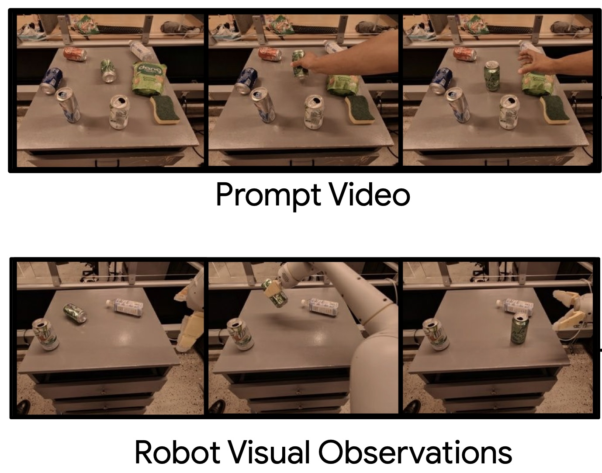
SOTOPIA-π: Interactive Learning of Socially Intelligent Language Agents
The 62nd Annual Meeting of the Association for Computational Linguistics (2024)
Ruiyi Wang, Haofei Yu, Wenxin Zhang, Zhengyang Qi, Maarten Sap, Graham Neubig, Yonatan Bisk, Hao Zhu
GitHub Website
Ruiyi Wang, Haofei Yu, Wenxin Zhang, Zhengyang Qi, Maarten Sap, Graham Neubig, Yonatan Bisk, Hao Zhu
GitHub Website
@inproceedings{ACL:Wang2024,
author = {Ruiyi Wang and Haofei Yu and Wenxin Zhang and Zhengyang Qi and Maarten Sap and Graham Neubig and Yonatan Bisk and Hao Zhu},
title = {SOTOPIA-π: Interactive Learning of Socially Intelligent Language Agents},
booktitle = {The 62nd Annual Meeting of the Association for Computational Linguistics},
year = {2024},
url = {https://arxiv.org/abs/2403.08715},
}
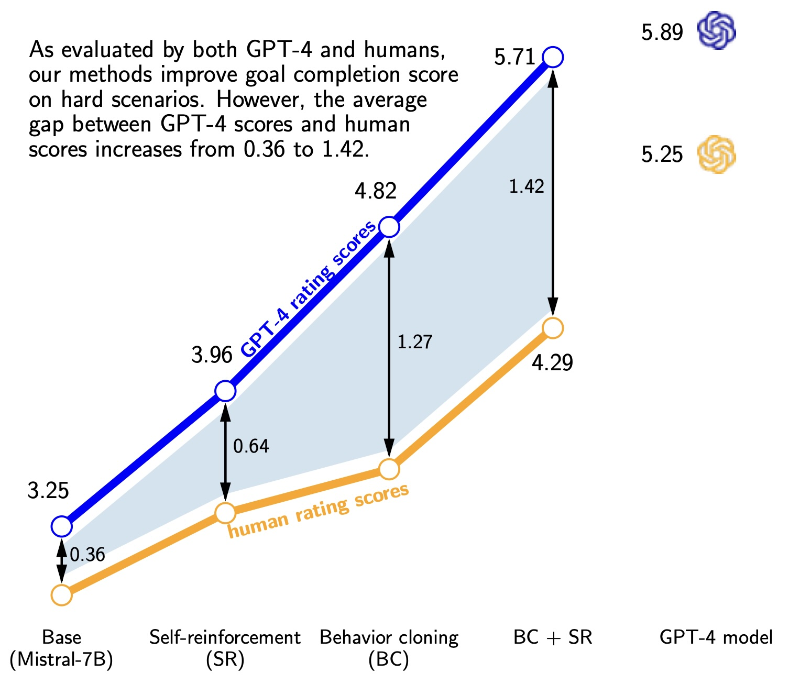
OpenEQA: Embodied Question Answering in the Era of Foundation Models
Conference on Computer Vision and Pattern Recognition (2024)
Arjun Majumdar, Anurag Ajay, Xiaohan Zhang, Pranav Putta, Sriram Yenamandra, Mikael Henaff, Sneha Silwal, Paul Mcvay, Oleksandr Maksymets, Sergio Arnaud, Karmesh Yadav, Qiyang Li, Ben Newman, Mohit Sharma, Vincent Berges, Shiqi Zhang, Pulkit Agrawal, Yonatan Bisk, Dhruv Batra, Mrinal Kalakrishnan, Franziska Meier, Chris Paxton, Sasha Sax, Aravind Rajeswaran
PDF Website Blog
Arjun Majumdar, Anurag Ajay, Xiaohan Zhang, Pranav Putta, Sriram Yenamandra, Mikael Henaff, Sneha Silwal, Paul Mcvay, Oleksandr Maksymets, Sergio Arnaud, Karmesh Yadav, Qiyang Li, Ben Newman, Mohit Sharma, Vincent Berges, Shiqi Zhang, Pulkit Agrawal, Yonatan Bisk, Dhruv Batra, Mrinal Kalakrishnan, Franziska Meier, Chris Paxton, Sasha Sax, Aravind Rajeswaran
PDF Website Blog
@inproceedings{CVPR:Majumdar2024,
author = {Arjun Majumdar and Anurag Ajay and Xiaohan Zhang and Pranav Putta and Sriram Yenamandra and Mikael Henaff and Sneha Silwal and Paul Mcvay and Oleksandr Maksymets and Sergio Arnaud and Karmesh Yadav and Qiyang Li and Ben Newman and Mohit Sharma and Vincent Berges and Shiqi Zhang and Pulkit Agrawal and Yonatan Bisk and Dhruv Batra and Mrinal Kalakrishnan and Franziska Meier and Chris Paxton and Sasha Sax and Aravind Rajeswaran},
title = {OpenEQA: Embodied Question Answering in the Era of Foundation Models},
booktitle = {Conference on Computer Vision and Pattern Recognition},
year = {2024},
url = {https://open-eqa.github.io/assets/pdfs/paper.pdf},
}
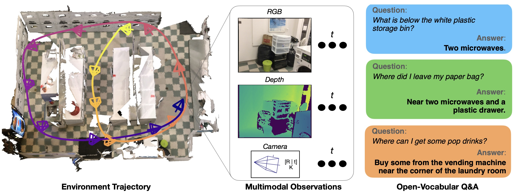
SOTOPIA: Interactive Evaluation for Social Intelligence in Language Agents
The Twelfth International Conference on Learning Representations (2024)
Xuhui Zhou, Hao Zhu, Leena Mathur, Ruohong Zhang, Haofei Yu, Zhengyang Qi, Louis-Philippe Morency, Yonatan Bisk, Daniel Fried, Graham Neubig, Maarten Sap
Xuhui Zhou, Hao Zhu, Leena Mathur, Ruohong Zhang, Haofei Yu, Zhengyang Qi, Louis-Philippe Morency, Yonatan Bisk, Daniel Fried, Graham Neubig, Maarten Sap
@inproceedings{ICLR:Zhou2024,
author = {Xuhui Zhou and Hao Zhu and Leena Mathur and Ruohong Zhang and Haofei Yu and Zhengyang Qi and Louis-Philippe Morency and Yonatan Bisk and Daniel Fried and Graham Neubig and Maarten Sap},
title = {SOTOPIA: Interactive Evaluation for Social Intelligence in Language Agents},
booktitle = {The Twelfth International Conference on Learning Representations},
year = {2024},
url = {http://arxiv.org/abs/2310.11667},
}
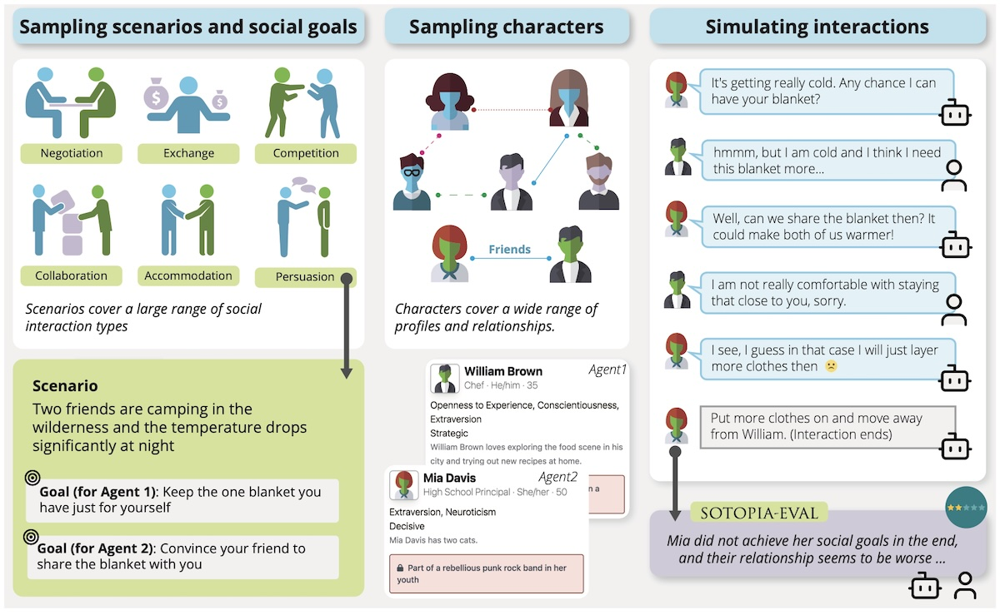
Open X-Embodiment: Robotic Learning Datasets and RT-X Models: Open X-Embodiment Collaboration
IEEE International Conference on Robotics and Automation (ICRA) (2024)
about 300 people... including me and Vidhi
Website
about 300 people... including me and Vidhi
Website
@inproceedings{ICRA:Vidhi2024,
author = {about 300 people... including me and Vidhi},
title = {Open X-Embodiment: Robotic Learning Datasets and RT-X Models: Open X-Embodiment Collaboration},
booktitle = {IEEE International Conference on Robotics and Automation (ICRA)},
year = {2024},
url = {https://arxiv.org/abs/2310.08864},
}
MOSAIC: Learning Unified Multi-Sensory Object Property Representations for Robot Perception
IEEE International Conference on Robotics and Automation (2024)
Gyan Tatiya, Jonathan Francis, Ho-Hsiang Wu, Yonatan Bisk, Jivko Sinapov
GitHub
Gyan Tatiya, Jonathan Francis, Ho-Hsiang Wu, Yonatan Bisk, Jivko Sinapov
GitHub
@inproceedings{ICRA:Tatiya2024,
author = {Gyan Tatiya and Jonathan Francis and Ho-Hsiang Wu and Yonatan Bisk and Jivko Sinapov},
title = {MOSAIC: Learning Unified Multi-Sensory Object Property Representations for Robot Perception},
booktitle = {IEEE International Conference on Robotics and Automation},
year = {2024},
url = {https://arxiv.org/abs/2309.08508},
}
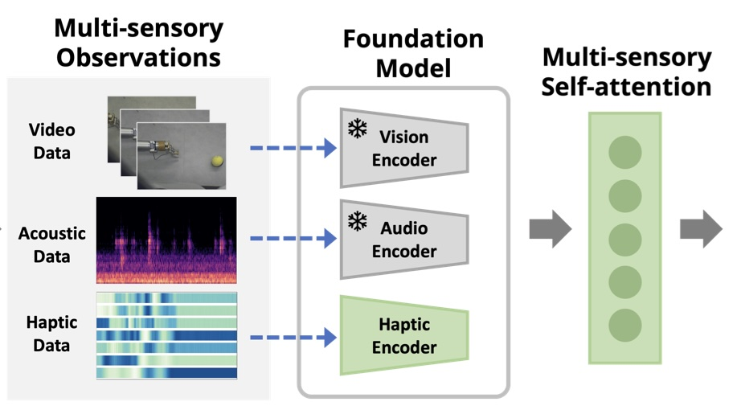
WebArena: A Realistic Web Environment for Building Autonomous Agents
The Twelfth International Conference on Learning Representations (2024)
Shuyan Zhou, Frank F. Xu, Hao Zhu, Xuhui Zhou, Robert Lo, Abishek Sridhar, Xianyi Cheng, Tianyue Ou, Yonatan Bisk, Daniel Fried, Uri Alon, Graham Neubig
GitHub Website
Shuyan Zhou, Frank F. Xu, Hao Zhu, Xuhui Zhou, Robert Lo, Abishek Sridhar, Xianyi Cheng, Tianyue Ou, Yonatan Bisk, Daniel Fried, Uri Alon, Graham Neubig
GitHub Website
@inproceedings{ICLR:Zhou2024,
author = {Shuyan Zhou and Frank F. Xu and Hao Zhu and Xuhui Zhou and Robert Lo and Abishek Sridhar and Xianyi Cheng and Tianyue Ou and Yonatan Bisk and Daniel Fried and Uri Alon and Graham Neubig},
title = {WebArena: A Realistic Web Environment for Building Autonomous Agents},
booktitle = {The Twelfth International Conference on Learning Representations},
year = {2024},
url = {https://arxiv.org/abs/2307.13854},
}
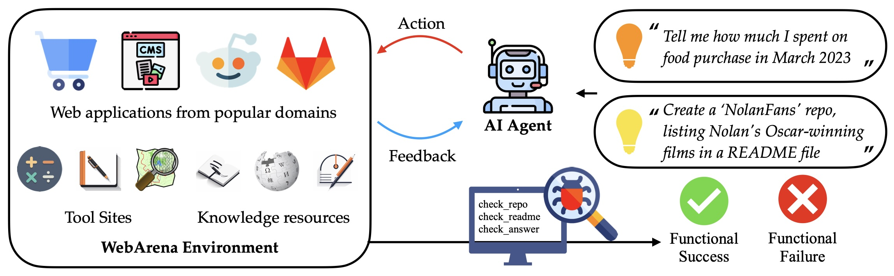
2023
Toward General-Purpose Robots via Foundation Models: A Survey and Meta-Analysis
ArXiv (2023)
Yafei Hu, Quanting Xie, Vidhi Jain, Jonathan Francis, Jay Patrikar, Nikhil Keetha, Seungchan Kim, Yaqi Xie, Tianyi Zhang, Shibo Zhao, Yu Quan Chong, Chen Wang, Katia Sycara, Matthew Johnson-Roberson, Dhruv Batra, Xiaolong Wang, Sebastian Scherer, Zsolt Kira, Fei Xia, Yonatan Bisk
GitHub Website
Yafei Hu, Quanting Xie, Vidhi Jain, Jonathan Francis, Jay Patrikar, Nikhil Keetha, Seungchan Kim, Yaqi Xie, Tianyi Zhang, Shibo Zhao, Yu Quan Chong, Chen Wang, Katia Sycara, Matthew Johnson-Roberson, Dhruv Batra, Xiaolong Wang, Sebastian Scherer, Zsolt Kira, Fei Xia, Yonatan Bisk
GitHub Website
@article{ArXiv:Hu2023,
author = {Yafei Hu and Quanting Xie and Vidhi Jain and Jonathan Francis and Jay Patrikar and Nikhil Keetha and Seungchan Kim and Yaqi Xie and Tianyi Zhang and Shibo Zhao and Yu Quan Chong and Chen Wang and Katia Sycara and Matthew Johnson-Roberson and Dhruv Batra and Xiaolong Wang and Sebastian Scherer and Zsolt Kira and Fei Xia and Yonatan Bisk},
title = {Toward General-Purpose Robots via Foundation Models: A Survey and Meta-Analysis},
journal = {ArXiv},
year = {2023},
url = {https://arxiv.org/abs/2312.08782},
}
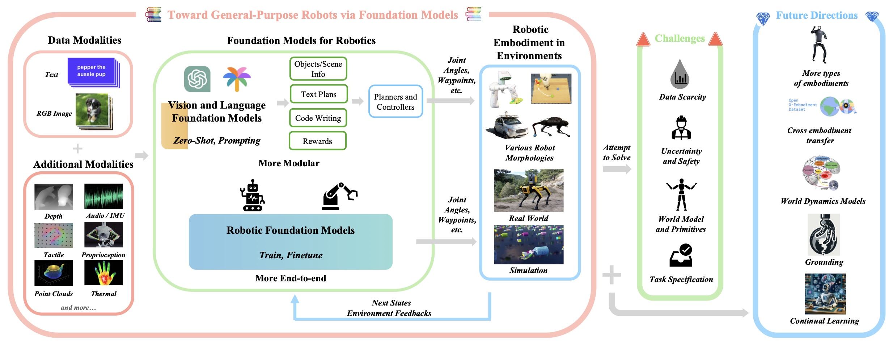
Reasoning about the Unseen for Efficient Outdoor Object Navigation
ArXiv (2023)
Quanting Xie, Tianyi Zhang, Kedi Xu, Matthew Johnson-Roberson, Yonatan Bisk
GitHub
Quanting Xie, Tianyi Zhang, Kedi Xu, Matthew Johnson-Roberson, Yonatan Bisk
GitHub
@article{ArXiv:Xie2023,
author = {Quanting Xie and Tianyi Zhang and Kedi Xu and Matthew Johnson-Roberson and Yonatan Bisk},
title = {Reasoning about the Unseen for Efficient Outdoor Object Navigation},
journal = {ArXiv},
year = {2023},
url = {https://arxiv.org/abs/2309.10103},
}
Spatial-Language Attention Policies for Efficient Robot Learning
Conference on Robot Learning (2023)
Priyam Parashar, Vidhi Jain, Xiaohan Zhang, Jay Vakil, Sam Powers, Yonatan Bisk, Chris Paxton
GitHub Website
Priyam Parashar, Vidhi Jain, Xiaohan Zhang, Jay Vakil, Sam Powers, Yonatan Bisk, Chris Paxton
GitHub Website
@inproceedings{CoRL:Parashar2023,
author = {Priyam Parashar and Vidhi Jain and Xiaohan Zhang and Jay Vakil and Sam Powers and Yonatan Bisk and Chris Paxton},
title = {Spatial-Language Attention Policies for Efficient Robot Learning},
booktitle = {Conference on Robot Learning},
year = {2023},
url = {https://arxiv.org/abs/2304.11235},
}
SPAE: Semantic Pyramid AutoEncoder for Multimodal Generation with Frozen LLMs
Thirty-seventh Conference on Neural Information Processing Systems (2023)
Lijun Yu, Yong Cheng, Zhiruo Wang, Vivek Kumar, Wolfgang Macherey, Yanping Huang, David A. Ross, Irfan Essa, Yonatan Bisk, Ming-Hsuan Yang, Kevin Murphy, Alexander Hauptmann, Lu Jiang
Lijun Yu, Yong Cheng, Zhiruo Wang, Vivek Kumar, Wolfgang Macherey, Yanping Huang, David A. Ross, Irfan Essa, Yonatan Bisk, Ming-Hsuan Yang, Kevin Murphy, Alexander Hauptmann, Lu Jiang
@inproceedings{NeurIPS:Yu2023,
author = {Lijun Yu and Yong Cheng and Zhiruo Wang and Vivek Kumar and Wolfgang Macherey and Yanping Huang and David A. Ross and Irfan Essa and Yonatan Bisk and Ming-Hsuan Yang and Kevin Murphy and Alexander Hauptmann and Lu Jiang},
title = {SPAE: Semantic Pyramid AutoEncoder for Multimodal Generation with Frozen LLMs},
booktitle = {Thirty-seventh Conference on Neural Information Processing Systems },
year = {2023},
url = {https://arxiv.org/abs/2306.17842},
}
HomeRobot: Open-Vocabulary Mobile Manipulation
Conference on Robot Learning (2023)
Sriram Yenamandra, Arun Ramachandran, Karmesh Yadav, Austin Wang, Mukul Khanna, Theophile Gervet, Tsung-Yen Yang, Vidhi Jain, Alexander William Clegg, John Turner, Zsolt Kira, Manolis Savva, Angel Chang, Devendra Singh Chaplot, Dhruv Batra, Roozbeh Mottaghi, Yonatan Bisk, Chris Paxton
GitHub Website Video
Sriram Yenamandra, Arun Ramachandran, Karmesh Yadav, Austin Wang, Mukul Khanna, Theophile Gervet, Tsung-Yen Yang, Vidhi Jain, Alexander William Clegg, John Turner, Zsolt Kira, Manolis Savva, Angel Chang, Devendra Singh Chaplot, Dhruv Batra, Roozbeh Mottaghi, Yonatan Bisk, Chris Paxton
GitHub Website Video
@inproceedings{CoRL:Yenamandra2023,
author = {Sriram Yenamandra and Arun Ramachandran and Karmesh Yadav and Austin Wang and Mukul Khanna and Theophile Gervet and Tsung-Yen Yang and Vidhi Jain and Alexander William Clegg and John Turner and Zsolt Kira and Manolis Savva and Angel Chang and Devendra Singh Chaplot and Dhruv Batra and Roozbeh Mottaghi and Yonatan Bisk and Chris Paxton},
title = {HomeRobot: Open-Vocabulary Mobile Manipulation},
booktitle = {Conference on Robot Learning},
year = {2023},
url = {https://arxiv.org/abs/2306.11565},
}
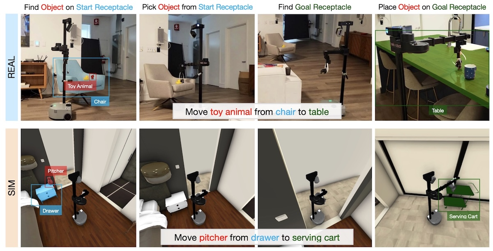
SPRING: GPT-4 Out-performs RL Algorithms by Studying Papers and Reasoning
Thirty-seventh Conference on Neural Information Processing Systems (2023)
Yue Wu, Shrimai Prabhumoye, So Yeon Min, Yonatan Bisk, Ruslan Salakhutdinov, Amos Azaria, Tom Mitchell, Yuanzhi Li
GitHub
Yue Wu, Shrimai Prabhumoye, So Yeon Min, Yonatan Bisk, Ruslan Salakhutdinov, Amos Azaria, Tom Mitchell, Yuanzhi Li
GitHub
@inproceedings{NeurIPS:Wu2023,
author = {Yue Wu and Shrimai Prabhumoye and So Yeon Min and Yonatan Bisk and Ruslan Salakhutdinov and Amos Azaria and Tom Mitchell and Yuanzhi Li},
title = {SPRING: GPT-4 Out-performs RL Algorithms by Studying Papers and Reasoning},
booktitle = {Thirty-seventh Conference on Neural Information Processing Systems },
year = {2023},
url = {https://arxiv.org/abs/2305.15486},
}
Plan, Eliminate, and Track -- Language Models are Good Teachers for Embodied Agents
ArXiv (2023)
Yue Wu, So Yeon Min, Yonatan Bisk, Ruslan Salakhutdinov, Amos Azaria, Yuanzhi Li, Tom Mitchell, Shrimai Prabhumoye
Yue Wu, So Yeon Min, Yonatan Bisk, Ruslan Salakhutdinov, Amos Azaria, Yuanzhi Li, Tom Mitchell, Shrimai Prabhumoye
@article{ArXiv:Wu2023,
author = {Yue Wu and So Yeon Min and Yonatan Bisk and Ruslan Salakhutdinov and Amos Azaria and Yuanzhi Li and Tom Mitchell and Shrimai Prabhumoye},
title = {Plan, Eliminate, and Track -- Language Models are Good Teachers for Embodied Agents},
journal = {ArXiv},
year = {2023},
url = {https://arxiv.org/abs/2305.02412},
}
Towards Open-World Mobile Manipulation in Homes: Lessons from the Neurips 2023 HomeRobot Open Vocabulary Mobile Manipulation Challenge
Thirty-seventh Conference on Neural Information Processing Systems: Competition Track (2023)
Sriram Yenamandra, Arun Ramachandran, Mukul Khanna, Karmesh Yadav, Jay Vakil, Andrew Melnik, Michael Büttner, Leon Harz, Lyon Brown, Gora Chand Nandi, Arjun PS, Gaurav Kumar Yadav, Rahul Kala, Robert Haschke, Yang Luo, Jinxin Zhu, Yansen Han, Bingyi Lu, Xuan Gu, Qinyuan Liu, Yaping Zhao, Qiting Ye, Chenxiao Dou, Yansong Chua, Volodymyr Kuzma, Vladyslav Humennyy, Ruslan Partsey, Jonathan Francis, Devendra Singh Chaplot, Gunjan Chhablani, Alexander Clegg, Theophile Gervet, Vidhi Jain, Ram Ramrakhya, Andrew Szot, Austin Wang, Tsung-Yen Yang, Aaron Edsinger, Charlie Kemp, Binit Shah, Zsolt Kira, Dhruv Batra, Roozbeh Mottaghi, Yonatan Bisk, Chris Paxton
Website
Sriram Yenamandra, Arun Ramachandran, Mukul Khanna, Karmesh Yadav, Jay Vakil, Andrew Melnik, Michael Büttner, Leon Harz, Lyon Brown, Gora Chand Nandi, Arjun PS, Gaurav Kumar Yadav, Rahul Kala, Robert Haschke, Yang Luo, Jinxin Zhu, Yansen Han, Bingyi Lu, Xuan Gu, Qinyuan Liu, Yaping Zhao, Qiting Ye, Chenxiao Dou, Yansong Chua, Volodymyr Kuzma, Vladyslav Humennyy, Ruslan Partsey, Jonathan Francis, Devendra Singh Chaplot, Gunjan Chhablani, Alexander Clegg, Theophile Gervet, Vidhi Jain, Ram Ramrakhya, Andrew Szot, Austin Wang, Tsung-Yen Yang, Aaron Edsinger, Charlie Kemp, Binit Shah, Zsolt Kira, Dhruv Batra, Roozbeh Mottaghi, Yonatan Bisk, Chris Paxton
Website
@inproceedings{NeurIPS-Challenge:Yenamandra2023,
author = {Sriram Yenamandra and Arun Ramachandran and Mukul Khanna and Karmesh Yadav and Jay Vakil and Andrew Melnik and Michael Büttner and Leon Harz and Lyon Brown and Gora Chand Nandi and Arjun PS and Gaurav Kumar Yadav and Rahul Kala and Robert Haschke and Yang Luo and Jinxin Zhu and Yansen Han and Bingyi Lu and Xuan Gu and Qinyuan Liu and Yaping Zhao and Qiting Ye and Chenxiao Dou and Yansong Chua and Volodymyr Kuzma and Vladyslav Humennyy and Ruslan Partsey and Jonathan Francis and Devendra Singh Chaplot and Gunjan Chhablani and Alexander Clegg and Theophile Gervet and Vidhi Jain and Ram Ramrakhya and Andrew Szot and Austin Wang and Tsung-Yen Yang and Aaron Edsinger and Charlie Kemp and Binit Shah and Zsolt Kira and Dhruv Batra and Roozbeh Mottaghi and Yonatan Bisk and Chris Paxton},
title = {Towards Open-World Mobile Manipulation in Homes: Lessons from the Neurips 2023 HomeRobot Open Vocabulary Mobile Manipulation Challenge},
booktitle = {Thirty-seventh Conference on Neural Information Processing Systems: Competition Track},
year = {2023},
url = {https://arxiv.org/abs/2407.06939},
}
EXCALIBUR: Encouraging and Evaluating Embodied Exploration
Conference on Computer Vision and Pattern Recognition (2023)
Hao Zhu, Raghav Kapoor, So Yeon Min, Winson Han, Jiatai Li, Kaiwen Geng, Graham Neubig, Yonatan Bisk, Aniruddha Kembhavi, Luca Weihs
PDF Video Tasks
Hao Zhu, Raghav Kapoor, So Yeon Min, Winson Han, Jiatai Li, Kaiwen Geng, Graham Neubig, Yonatan Bisk, Aniruddha Kembhavi, Luca Weihs
PDF Video Tasks
@inproceedings{CVPR:Zhu2023,
author = {Hao Zhu and Raghav Kapoor and So Yeon Min and Winson Han and Jiatai Li and Kaiwen Geng and Graham Neubig and Yonatan Bisk and Aniruddha Kembhavi and Luca Weihs},
title = {EXCALIBUR: Encouraging and Evaluating Embodied Exploration},
booktitle = {Conference on Computer Vision and Pattern Recognition},
year = {2023},
url = {https://openaccess.thecvf.com/content/CVPR2023/html/Zhu_EXCALIBUR_Encouraging_and_Evaluating_Embodied_Exploration_CVPR_2023_paper.html},
}
The Framework Tax: Disparities Between Inference Efficiency in Research and Deployment
The 2023 Conference on Empirical Methods in Natural Language Processing (2023)
Jared Fernandez, Jacob Kahn, Clara Na, Yonatan Bisk, Emma Strubell
Jared Fernandez, Jacob Kahn, Clara Na, Yonatan Bisk, Emma Strubell
@inproceedings{EMNLP:Fernandez2023,
author = {Jared Fernandez and Jacob Kahn and Clara Na and Yonatan Bisk and Emma Strubell},
title = {The Framework Tax: Disparities Between Inference Efficiency in Research and Deployment},
booktitle = {The 2023 Conference on Empirical Methods in Natural Language Processing },
year = {2023},
url = {https://arxiv.org/abs/2302.06117},
}
Computational Language Acquisition with Theory of Mind
The Eleventh International Conference on Learning Representations (2023)
Andy Liu, Hao Zhu, Emmy Liu, Yonatan Bisk, Graham Neubig
PDF GitHub
Andy Liu, Hao Zhu, Emmy Liu, Yonatan Bisk, Graham Neubig
PDF GitHub
@inproceedings{ICLR:Liu2023,
author = {Andy Liu and Hao Zhu and Emmy Liu and Yonatan Bisk and Graham Neubig},
title = {Computational Language Acquisition with Theory of Mind},
booktitle = {The Eleventh International Conference on Learning Representations},
year = {2023},
url = {https://openreview.net/forum?id=C2ulri4duIs},
}
Self-Supervised Object Goal Navigation with In-Situ Finetuning
IEEE/RSJ International Conference on Intelligent Robots and Systems (2023)
So Yeon Min, Yao-Hung Hubert Tsai, Wei Ding, Ali Farhadi, Ruslan Salakhutdinov, Yonatan Bisk, Jian Zhang
Video
So Yeon Min, Yao-Hung Hubert Tsai, Wei Ding, Ali Farhadi, Ruslan Salakhutdinov, Yonatan Bisk, Jian Zhang
Video
@inproceedings{IROS:Min2023,
author = {So Yeon Min and Yao-Hung Hubert Tsai and Wei Ding and Ali Farhadi and Ruslan Salakhutdinov and Yonatan Bisk and Jian Zhang},
title = {Self-Supervised Object Goal Navigation with In-Situ Finetuning},
booktitle = {IEEE/RSJ International Conference on Intelligent Robots and Systems},
year = {2023},
url = {https://arxiv.org/abs/2212.05923},
}
Training Vision-Language Transformers from Captions
Transactions on Machine Learning Research (2023)
Liangke Gui, Yingshan Chang, Qiuyuan Huang, Subhojit Som, Alexander Hauptmann, Jianfeng Gao, Yonatan Bisk
GitHub
Liangke Gui, Yingshan Chang, Qiuyuan Huang, Subhojit Som, Alexander Hauptmann, Jianfeng Gao, Yonatan Bisk
GitHub
@article{TMLR:Gui2023,
author = {Liangke Gui and Yingshan Chang and Qiuyuan Huang and Subhojit Som and Alexander Hauptmann and Jianfeng Gao and Yonatan Bisk},
title = {Training Vision-Language Transformers from Captions},
journal = {Transactions on Machine Learning Research},
year = {2023},
url = {https://arxiv.org/abs/2205.09256},
}
2022
MAEA: Multimodal Attribution for Embodied AI
Progress and Challenges in Building Trustworthy Embodied AI at NeurIPS 2022 (2022)
Vidhi Jain, Jayant Sravan Tamarapalli, Sahiti Yerramilli, Yonatan Bisk
PDF
Vidhi Jain, Jayant Sravan Tamarapalli, Sahiti Yerramilli, Yonatan Bisk
@inproceedings{TEA-Wksp:Jain2022,
author = {Vidhi Jain and Jayant Sravan Tamarapalli and Sahiti Yerramilli and Yonatan Bisk},
title = {MAEA: Multimodal Attribution for Embodied AI},
booktitle = {Progress and Challenges in Building Trustworthy Embodied AI at NeurIPS 2022},
year = {2022},
url = {https://openreview.net/pdf?id=OUs2us5Xhx},
}
Tackling AlfWorld with Action Attention and Common Sense from Language Models
Language and Reinforcement Learning Workshop at NeurIPS 2022 (2022)
Yue Wu, So Yeon Min, Yonatan Bisk, Ruslan Salakhutdinov, Shrimai Prabhumoye
PDF
Yue Wu, So Yeon Min, Yonatan Bisk, Ruslan Salakhutdinov, Shrimai Prabhumoye
@inproceedings{LaReL-Wksp:Wu2022,
author = {Yue Wu and So Yeon Min and Yonatan Bisk and Ruslan Salakhutdinov and Shrimai Prabhumoye},
title = {Tackling AlfWorld with Action Attention and Common Sense from Language Models},
booktitle = {Language and Reinforcement Learning Workshop at NeurIPS 2022},
year = {2022},
url = {https://openreview.net/forum?id=AqkPRUZ-YkO},
}
Retrospectives on the Embodied AI Workshop
ArXiv (2022)
Matt Deitke, Dhruv Batra, Yonatan Bisk, Tommaso Campari, Angel X. Chang, Devendra Singh Chaplot, Changan Chen, Claudia Pérez D'Arpino, Kiana Ehsani, Ali Farhadi, Li Fei-Fei, Anthony Francis, Chuang Gan, Kristen Grauman, David Hall, Winson Han, Unnat Jain, Aniruddha Kembhavi, Jacob Krantz, Stefan Lee, Chengshu Li, Sagnik Majumder, Oleksandr Maksymets, Roberto Martín-Martín, Roozbeh Mottaghi, Sonia Raychaudhuri, Mike Roberts, Silvio Savarese, Manolis Savva, Mohit Shridhar, Niko Sünderhauf, Andrew Szot, Ben Talbot, Joshua B. Tenenbaum, Jesse Thomason, Alexander Toshev, Joanne Truong, Luca Weihs, Jiajun Wu
Matt Deitke, Dhruv Batra, Yonatan Bisk, Tommaso Campari, Angel X. Chang, Devendra Singh Chaplot, Changan Chen, Claudia Pérez D'Arpino, Kiana Ehsani, Ali Farhadi, Li Fei-Fei, Anthony Francis, Chuang Gan, Kristen Grauman, David Hall, Winson Han, Unnat Jain, Aniruddha Kembhavi, Jacob Krantz, Stefan Lee, Chengshu Li, Sagnik Majumder, Oleksandr Maksymets, Roberto Martín-Martín, Roozbeh Mottaghi, Sonia Raychaudhuri, Mike Roberts, Silvio Savarese, Manolis Savva, Mohit Shridhar, Niko Sünderhauf, Andrew Szot, Ben Talbot, Joshua B. Tenenbaum, Jesse Thomason, Alexander Toshev, Joanne Truong, Luca Weihs, Jiajun Wu
@article{ArXiv:Deitke2022,
author = {Matt Deitke and Dhruv Batra and Yonatan Bisk and Tommaso Campari and Angel X. Chang and Devendra Singh Chaplot and Changan Chen and Claudia Pérez D'Arpino and Kiana Ehsani and Ali Farhadi and Li Fei-Fei and Anthony Francis and Chuang Gan and Kristen Grauman and David Hall and Winson Han and Unnat Jain and Aniruddha Kembhavi and Jacob Krantz and Stefan Lee and Chengshu Li and Sagnik Majumder and Oleksandr Maksymets and Roberto Martín-Martín and Roozbeh Mottaghi and Sonia Raychaudhuri and Mike Roberts and Silvio Savarese and Manolis Savva and Mohit Shridhar and Niko Sünderhauf and Andrew Szot and Ben Talbot and Joshua B. Tenenbaum and Jesse Thomason and Alexander Toshev and Joanne Truong and Luca Weihs and Jiajun Wu},
title = {Retrospectives on the Embodied AI Workshop},
journal = {ArXiv},
year = {2022},
url = {https://arxiv.org/abs/2210.06849},
}
Don't Copy the Teacher: Data and Model Challenges in Embodied Dialogue
Conference on Empirical Methods in Natural Language Processing (2022)
So Yeon Min, Hao Zhu, Ruslan Salakhutdinov, Yonatan Bisk
Video
So Yeon Min, Hao Zhu, Ruslan Salakhutdinov, Yonatan Bisk
Video
@inproceedings{EMNLP:Min2022,
author = {So Yeon Min and Hao Zhu and Ruslan Salakhutdinov and Yonatan Bisk},
title = {Don't Copy the Teacher: Data and Model Challenges in Embodied Dialogue},
booktitle = {Conference on Empirical Methods in Natural Language Processing},
year = {2022},
url = {https://arxiv.org/abs/2210.04443},
}
EvEntS ReaLM: Event Reasoning of Entity States via Language Models
Conference on Empirical Methods in Natural Language Processing (2022)
Evangelia Spiliopoulou, Artidoro Pagnoni, Yonatan Bisk, Eduard Hovy
Evangelia Spiliopoulou, Artidoro Pagnoni, Yonatan Bisk, Eduard Hovy
@inproceedings{EMNLP:Spiliopoulou2022,
author = {Evangelia Spiliopoulou and Artidoro Pagnoni and Yonatan Bisk and Eduard Hovy},
title = {EvEntS ReaLM: Event Reasoning of Entity States via Language Models},
booktitle = {Conference on Empirical Methods in Natural Language Processing},
year = {2022},
url = {https://arxiv.org/abs/2211.05392},
}
On Advances in Text Generation from Images Beyond Captioning: A Case Study in Self-Rationalization
Findings of the Conference on Empirical Methods in Natural Language Processing (2022)
Shruti Palaskar, Akshita Bhagia, Yonatan Bisk, Florian Metze, Alan W Black, Ana Marasovic
Shruti Palaskar, Akshita Bhagia, Yonatan Bisk, Florian Metze, Alan W Black, Ana Marasovic
@inproceedings{EMNLP-Findings:Palaskar2022,
author = {Shruti Palaskar and Akshita Bhagia and Yonatan Bisk and Florian Metze and Alan W Black and Ana Marasovic},
title = {On Advances in Text Generation from Images Beyond Captioning: A Case Study in Self-Rationalization},
booktitle = {Findings of the Conference on Empirical Methods in Natural Language Processing},
year = {2022},
url = {https://arxiv.org/abs/2205.11686},
}
Transformers are Adaptable Task Planners
Conference on Robot Learning (2022)
Vidhi Jain, Yixin Lin, Eric Undersander, Yonatan Bisk, Akshara Rai
Video
Vidhi Jain, Yixin Lin, Eric Undersander, Yonatan Bisk, Akshara Rai
Video
@inproceedings{CoRL:Jain2022,
author = {Vidhi Jain and Yixin Lin and Eric Undersander and Yonatan Bisk and Akshara Rai},
title = {Transformers are Adaptable Task Planners},
booktitle = {Conference on Robot Learning},
year = {2022},
url = {https://arxiv.org/abs/2207.02442},
}
Symmetric Machine Theory of Mind
39th International Conference on Machine Learning (2022)
Melanie Sclar, Graham Neubig, Yonatan Bisk
PDF GitHub Video
Melanie Sclar, Graham Neubig, Yonatan Bisk
PDF GitHub Video
@inproceedings{ICML:Sclar2022,
author = {Melanie Sclar and Graham Neubig and Yonatan Bisk},
title = {Symmetric Machine Theory of Mind},
booktitle = {39th International Conference on Machine Learning},
year = {2022},
url = {https://proceedings.mlr.press/v162/sclar22a.html},
}
A Framework for Learning to Request Rich and Contextually Useful Information from Humans
39th International Conference on Machine Learning, (2022)
Khanh Nguyen, Yonatan Bisk, Hal Daume III
Video
Khanh Nguyen, Yonatan Bisk, Hal Daume III
Video
@inproceedings{ICML:Nguyen2022,
author = {Khanh Nguyen and Yonatan Bisk and Hal Daume III},
title = {A Framework for Learning to Request Rich and Contextually Useful Information from Humans},
booktitle = {39th International Conference on Machine Learning,},
year = {2022},
url = {http://arxiv.org/abs/2110.08258},
}
Simulated Language Learning from Communicative Goals and Linguistic Input
Annual Meeting of the Cognitive Science Society (2022)
Hao Zhu, Yonatan Bisk, Graham Neubig
PDF
Hao Zhu, Yonatan Bisk, Graham Neubig
@inproceedings{CogSci:Zhu2022,
author = {Hao Zhu and Yonatan Bisk and Graham Neubig},
title = {Simulated Language Learning from Communicative Goals and Linguistic Input},
booktitle = {Annual Meeting of the Cognitive Science Society},
year = {2022},
url = {https://escholarship.org/uc/item/7p65n371},
}
HEAR 2021: Holistic Evaluation of Audio Representations
Proceedings of Machine Learning Research (PMLR): NeurIPS 2021 Competition Track (2022)
Joseph Turian, Jordie Shier, Humair Raj Khan, Bhiksha Raj, Björn W. Schuller, Christian J. Steinmetz, Colin Malloy, George Tzanetakis, Gissel Velarde, Kirk McNally, Max Henry, Nicolas Pinto, Camille Noufi, Christian Clough, Dorien Herremans, Eduardo Fonseca, Jesse Engel, Justin Salamon, Philippe Esling, Pranay Manocha, Shinji Watanabe, Zeyu Jin, Yonatan Bisk
Website
Joseph Turian, Jordie Shier, Humair Raj Khan, Bhiksha Raj, Björn W. Schuller, Christian J. Steinmetz, Colin Malloy, George Tzanetakis, Gissel Velarde, Kirk McNally, Max Henry, Nicolas Pinto, Camille Noufi, Christian Clough, Dorien Herremans, Eduardo Fonseca, Jesse Engel, Justin Salamon, Philippe Esling, Pranay Manocha, Shinji Watanabe, Zeyu Jin, Yonatan Bisk
Website
@inproceedings{PMLR:Turian2022,
author = {Joseph Turian and Jordie Shier and Humair Raj Khan and Bhiksha Raj and Björn W. Schuller and Christian J. Steinmetz and Colin Malloy and George Tzanetakis and Gissel Velarde and Kirk McNally and Max Henry and Nicolas Pinto and Camille Noufi and Christian Clough and Dorien Herremans and Eduardo Fonseca and Jesse Engel and Justin Salamon and Philippe Esling and Pranay Manocha and Shinji Watanabe and Zeyu Jin and Yonatan Bisk},
title = {HEAR 2021: Holistic Evaluation of Audio Representations},
booktitle = {Proceedings of Machine Learning Research (PMLR): NeurIPS 2021 Competition Track},
year = {2022},
url = {http://arxiv.org/abs/2203.03022},
}
KAT: A Knowledge Augmented Transformer for Vision-and-Language
Annual Conference of the North American Chapter of the Association for Computational Linguistics (2022)
Liangke Gui, Borui Wang, Qiuyuan Huang, Alexander Hauptmann, Yonatan Bisk, Jianfeng Gao
GitHub
Liangke Gui, Borui Wang, Qiuyuan Huang, Alexander Hauptmann, Yonatan Bisk, Jianfeng Gao
GitHub
@inproceedings{NAACL:Gui2022,
author = {Liangke Gui and Borui Wang and Qiuyuan Huang and Alexander Hauptmann and Yonatan Bisk and Jianfeng Gao},
title = {KAT: A Knowledge Augmented Transformer for Vision-and-Language},
booktitle = {Annual Conference of the North American Chapter of the Association for Computational Linguistics},
year = {2022},
url = {https://arxiv.org/abs/2112.08614},
}
FILM: Following Instructions in Language with Modular Methods
The Tenth International Conference on Learning Representations (2022)
So Yeon Min, Devendra Singh Chaplot, Pradeep Ravikumar, Yonatan Bisk, Ruslan Salakhutdinov
GitHub Website Video
So Yeon Min, Devendra Singh Chaplot, Pradeep Ravikumar, Yonatan Bisk, Ruslan Salakhutdinov
GitHub Website Video
@inproceedings{ICLR:Min2022,
author = {So Yeon Min and Devendra Singh Chaplot and Pradeep Ravikumar and Yonatan Bisk and Ruslan Salakhutdinov},
title = {FILM: Following Instructions in Language with Modular Methods},
booktitle = {The Tenth International Conference on Learning Representations},
year = {2022},
url = {https://arxiv.org/abs/2110.07342},
}
WebQA: Multihop and Multimodal QA
Conference on Computer Vision and Pattern Recognition (2022)
Yingshan Chang, Mridu Narang, Hisami Suzuki, Guihong Cao, Jianfeng Gao, Yonatan Bisk
Project Leaderboard Challenge Summary
Yingshan Chang, Mridu Narang, Hisami Suzuki, Guihong Cao, Jianfeng Gao, Yonatan Bisk
Project Leaderboard Challenge Summary
@inproceedings{CVPR:Chang2022,
author = {Yingshan Chang and Mridu Narang and Hisami Suzuki and Guihong Cao and Jianfeng Gao and Yonatan Bisk},
title = {WebQA: Multihop and Multimodal QA},
booktitle = {Conference on Computer Vision and Pattern Recognition},
year = {2022},
url = {https://arxiv.org/abs/2109.00590},
}
Worst of Both Worlds: Biases Compound in Pre-trained Vision-and-Language Models
4th Workshop on Gender Bias in Natural Language Processing (2022)
Tejas Srinivasan, Yonatan Bisk
Tejas Srinivasan, Yonatan Bisk
@inproceedings{GeBNLP-Wksp:Srinivasan2022,
author = {Tejas Srinivasan and Yonatan Bisk},
title = {Worst of Both Worlds: Biases Compound in Pre-trained Vision-and-Language Models},
booktitle = {4th Workshop on Gender Bias in Natural Language Processing},
year = {2022},
url = {https://arxiv.org/abs/2104.08666},
}
2021
Dependency Induction Through the Lens of Visual Perception
The SIGNLL Conference on Computational Natural Language Learning (2021)
Ruisi Su, Shruti Rijhwani, Hao Zhu, Junxian He, Xinyu Wang, Yonatan Bisk, Graham Neubig
GitHub
Ruisi Su, Shruti Rijhwani, Hao Zhu, Junxian He, Xinyu Wang, Yonatan Bisk, Graham Neubig
GitHub
@inproceedings{CoNLL:Su2021,
author = {Ruisi Su and Shruti Rijhwani and Hao Zhu and Junxian He and Xinyu Wang and Yonatan Bisk and Graham Neubig},
title = {Dependency Induction Through the Lens of Visual Perception},
booktitle = {The SIGNLL Conference on Computational Natural Language Learning},
year = {2021},
url = {https://arxiv.org/abs/2109.09790},
}
Language Grounding with 3D Objects
Conference on Robot Learning (2021)
Jesse Thomason, Mohit Shridhar, Yonatan Bisk, Chris Paxton, Luke Zettlemoyer
GitHub
Jesse Thomason, Mohit Shridhar, Yonatan Bisk, Chris Paxton, Luke Zettlemoyer
GitHub
@inproceedings{CoRL:Thomason2021,
author = {Jesse Thomason and Mohit Shridhar and Yonatan Bisk and Chris Paxton and Luke Zettlemoyer},
title = {Language Grounding with 3D Objects},
booktitle = {Conference on Robot Learning},
year = {2021},
url = {https://arxiv.org/abs/2107.12514},
}
TACo: Token-aware Cascade Contrastive Learning for Video-Text Alignment
International Conference on Computer Vision (2021)
Jianwei Yang, Yonatan Bisk, Jianfeng Gao
Jianwei Yang, Yonatan Bisk, Jianfeng Gao
@inproceedings{ICCV:Yang2021,
author = {Jianwei Yang and Yonatan Bisk and Jianfeng Gao},
title = {TACo: Token-aware Cascade Contrastive Learning for Video-Text Alignment},
booktitle = {International Conference on Computer Vision},
year = {2021},
url = {https://arxiv.org/abs/2108.09980},
}
KB-VLP: Knowledge Based Vision and Language Pretraining
ICML21 Workshop on Self-Supervised Learning (2021)
Kezhen Chen, Qiuyuan Huang, Yonatan Bisk, Daniel McDuff, Jianfeng Gao
PDF
Kezhen Chen, Qiuyuan Huang, Yonatan Bisk, Daniel McDuff, Jianfeng Gao
@inproceedings{SSL-Wksp:Chen2021,
author = {Kezhen Chen and Qiuyuan Huang and Yonatan Bisk and Daniel McDuff and Jianfeng Gao},
title = {KB-VLP: Knowledge Based Vision and Language Pretraining},
booktitle = {ICML21 Workshop on Self-Supervised Learning},
year = {2021},
url = {https://www.microsoft.com/en-us/research/publication/kb-vlp-knowledge-based-vision-and-language-pretraining-2/},
}
Few-shot Language Coordination by Modeling Theory of Mind
The Thirty-eighth International Conference on Machine Learning (2021)
Hao Zhu, Graham Neubig, Yonatan Bisk
PDF GitHub
Hao Zhu, Graham Neubig, Yonatan Bisk
PDF GitHub
@inproceedings{ICML:Zhu2021,
author = {Hao Zhu and Graham Neubig and Yonatan Bisk},
title = {Few-shot Language Coordination by Modeling Theory of Mind},
booktitle = {The Thirty-eighth International Conference on Machine Learning},
year = {2021},
url = {http://proceedings.mlr.press/v139/zhu21d.html},
}
Grounding `Grounding' in NLP
Findings of The 2021 Conference of the Association for Computational Linguistics (2021)
Khyathi Raghavi Chandu, Yonatan Bisk, Alan W Black
Khyathi Raghavi Chandu, Yonatan Bisk, Alan W Black
@inproceedings{ACL-Findings:Chandu2021,
author = {Khyathi Raghavi Chandu and Yonatan Bisk and Alan W Black},
title = {Grounding `Grounding' in NLP},
booktitle = {Findings of The 2021 Conference of the Association for Computational Linguistics},
year = {2021},
url = {https://arxiv.org/abs/2106.02192},
}
An Empirical Study on the Generalization Power of Neural Representations Learned via Visual Guessing Games
The 2021 Conference of the European Chapter of the Association for Computational Linguistics (2021)
Alessandro Suglia, Yonatan Bisk, Ioannis Konstas, Antonio Vergari, Emanuele Bastianelli, Andrea Vanzo, Oliver Lemon
Alessandro Suglia, Yonatan Bisk, Ioannis Konstas, Antonio Vergari, Emanuele Bastianelli, Andrea Vanzo, Oliver Lemon
@inproceedings{EACL:Suglia2021,
author = {Alessandro Suglia and Yonatan Bisk and Ioannis Konstas and Antonio Vergari and Emanuele Bastianelli and Andrea Vanzo and Oliver Lemon},
title = {An Empirical Study on the Generalization Power of Neural Representations Learned via Visual Guessing Games},
booktitle = {The 2021 Conference of the European Chapter of the Association for Computational Linguistics},
year = {2021},
url = {https://arxiv.org/abs/2102.00424},
}
Knowledge-driven Data Construction for Zero-shot Evaluation in Commonsense Question Answering
35th AAAI Conference on Artificial Intelligence (2021)
Kaixin Ma, Filip Ilievski, Jonathan Francis, Yonatan Bisk, Eric Nyberg, Alessandro Oltramari
GitHub
Kaixin Ma, Filip Ilievski, Jonathan Francis, Yonatan Bisk, Eric Nyberg, Alessandro Oltramari
GitHub
@inproceedings{AAAI:Ma2021,
author = {Kaixin Ma and Filip Ilievski and Jonathan Francis and Yonatan Bisk and Eric Nyberg and Alessandro Oltramari},
title = {Knowledge-driven Data Construction for Zero-shot Evaluation in Commonsense Question Answering},
booktitle = {35th AAAI Conference on Artificial Intelligence},
year = {2021},
url = {https://arxiv.org/abs/2011.03863},
}
ALFWorld: Aligning Text and Embodied Environments for Interactive Learning
International Conference on Learning Representations (2021)
Mohit Shridhar, Xingdi Yuan, Marc-Alexandre Côté, Yonatan Bisk, Adam Trischler, Matthew Hausknecht
GitHub Website
Mohit Shridhar, Xingdi Yuan, Marc-Alexandre Côté, Yonatan Bisk, Adam Trischler, Matthew Hausknecht
GitHub Website
@inproceedings{ICLR:Shridhar2021,
author = {Mohit Shridhar and Xingdi Yuan and Marc-Alexandre C{\^o}t{\'e} and Yonatan Bisk and Adam Trischler and Matthew Hausknecht},
title = {ALFWorld: Aligning Text and Embodied Environments for Interactive Learning},
booktitle = {International Conference on Learning Representations},
year = {2021},
url = {https://arxiv.org/abs/2010.03768},
}
2020
Imagining Grounded Conceptual Representations from Perceptual Information in Situated Guessing Games
The 28th International Conference on Computational Linguistics (2020)
Alessandro Suglia, Antonio Vergari, Ioannis Konstas, Yonatan Bisk, Emanuele Bastianelli, Andrea Vanzo, Oliver Lemon
Alessandro Suglia, Antonio Vergari, Ioannis Konstas, Yonatan Bisk, Emanuele Bastianelli, Andrea Vanzo, Oliver Lemon
@inproceedings{Coling:Suglia2020,
author = {Alessandro Suglia and Antonio Vergari and Ioannis Konstas and Yonatan Bisk and Emanuele Bastianelli and Andrea Vanzo and Oliver Lemon},
title = {Imagining Grounded Conceptual Representations from Perceptual Information in Situated Guessing Games},
booktitle = {The 28th International Conference on Computational Linguistics},
year = {2020},
url = {https://arxiv.org/abs/2011.02917},
}
The Return of Lexical Dependencies: Neural Lexicalized PCFGs
Transactions of the Association for Computational Linguistics (2020)
Hao Zhu, Yonatan Bisk, Graham Neubig
GitHub
Hao Zhu, Yonatan Bisk, Graham Neubig
GitHub
@article{TACL:Zhu2020,
author = {Hao Zhu and Yonatan Bisk and Graham Neubig},
title = {The Return of Lexical Dependencies: Neural Lexicalized PCFGs},
journal = {Transactions of the Association for Computational Linguistics},
year = {2020},
url = {http://arxiv.org/abs/2007.15135},
}
Experience Grounds Language
Conference on Empirical Methods in Natural Language Processing (2020)
Yonatan Bisk, Ari Holtzman, Jesse Thomason, Jacob Andreas, Yoshua Bengio, Joyce Chai, Mirella Lapata, Angeliki Lazaridou, Jonathan May, Aleksandr Nisnevich, Nicolas Pinto, Joseph Turian
Video
Yonatan Bisk, Ari Holtzman, Jesse Thomason, Jacob Andreas, Yoshua Bengio, Joyce Chai, Mirella Lapata, Angeliki Lazaridou, Jonathan May, Aleksandr Nisnevich, Nicolas Pinto, Joseph Turian
Video
@inproceedings{EMNLP:Bisk2020,
author = {Yonatan Bisk and Ari Holtzman and Jesse Thomason and Jacob Andreas and Yoshua Bengio and Joyce Chai and Mirella Lapata and Angeliki Lazaridou and Jonathan May and Aleksandr Nisnevich and Nicolas Pinto and Joseph Turian},
title = {Experience Grounds Language},
booktitle = {Conference on Empirical Methods in Natural Language Processing},
year = {2020},
url = {https://arxiv.org/abs/2004.10151},
}
RMM: A Recursive Mental Model for Dialog Navigation
Conference on Empirical Methods in Natural Language Processing: Findings (2020)
Homero Roman Roman, Yonatan Bisk, Jesse Thomason, Asli Celikyilmaz, Jianfeng Gao
GitHub
Homero Roman Roman, Yonatan Bisk, Jesse Thomason, Asli Celikyilmaz, Jianfeng Gao
GitHub
@inproceedings{EMNLP-Findings:Roman2020,
author = {Homero Roman Roman and Yonatan Bisk and Jesse Thomason and Asli Celikyilmaz and Jianfeng Gao},
title = {RMM: A Recursive Mental Model for Dialog Navigation},
booktitle = {Conference on Empirical Methods in Natural Language Processing: Findings},
year = {2020},
url = {https://arxiv.org/abs/2005.00728},
}
A Benchmark for Structured Procedural Knowledge Extraction from Cooking Videos
Workshop on NLP Beyond Text (2020)
Frank F. Xu, Lei Ji, Botian Shi, Junyi Du, Graham Neubig, Yonatan Bisk, Nan Duan
GitHub
Frank F. Xu, Lei Ji, Botian Shi, Junyi Du, Graham Neubig, Yonatan Bisk, Nan Duan
GitHub
@inproceedings{NLPBT-Wksp:Xu2020,
author = {Frank F. Xu and Lei Ji and Botian Shi and Junyi Du and Graham Neubig and Yonatan Bisk and Nan Duan},
title = {A Benchmark for Structured Procedural Knowledge Extraction from Cooking Videos},
booktitle = {Workshop on NLP Beyond Text},
year = {2020},
url = {https://arxiv.org/abs/2005.00706},
}
Multi-View Learning for Vision-and-Language Navigation
ArXiv (2020)
Qiaolin Xia, Xiujun Li, Chunyuan Li, Yonatan Bisk, Zhifang Sui, Jianfeng Gao, Yejin Choi, Noah A. Smith
Qiaolin Xia, Xiujun Li, Chunyuan Li, Yonatan Bisk, Zhifang Sui, Jianfeng Gao, Yejin Choi, Noah A. Smith
@article{ArXiv:Xia2020,
author = {Qiaolin Xia and Xiujun Li and Chunyuan Li and Yonatan Bisk and Zhifang Sui and Jianfeng Gao and Yejin Choi and Noah A. Smith},
title = {Multi-View Learning for Vision-and-Language Navigation},
journal = {ArXiv},
year = {2020},
url = {https://arxiv.org/abs/2003.00857},
}
ALFRED: A Benchmark for Interpreting Grounded Instructions for Everyday Tasks
The IEEE Conference on Computer Vision and Pattern Recognition (CVPR) (2020)
Mohit Shridhar, Jesse Thomason, Daniel Gordon, Yonatan Bisk, Winson Han, Roozbeh Mottaghi, Luke Zettlemoyer, Dieter Fox
GitHub Website
Mohit Shridhar, Jesse Thomason, Daniel Gordon, Yonatan Bisk, Winson Han, Roozbeh Mottaghi, Luke Zettlemoyer, Dieter Fox
GitHub Website
@inproceedings{CVPR:Shridhar2020,
author = {Mohit Shridhar and Jesse Thomason and Daniel Gordon and Yonatan Bisk and Winson Han and Roozbeh Mottaghi and Luke Zettlemoyer and Dieter Fox},
title = {ALFRED: A Benchmark for Interpreting Grounded Instructions for Everyday Tasks},
booktitle = {The IEEE Conference on Computer Vision and Pattern Recognition (CVPR)},
year = {2020},
url = {https://arxiv.org/abs/1912.01734},
}
PIQA: Reasoning about Physical Commonsense in Natural Language
Thirty-Fourth AAAI Conference on Artificial Intelligence (2020)
Yonatan Bisk, Rowan Zellers, Ronan Le Bras, Jianfeng Gao, Yejin Choi
Leaderboard
Yonatan Bisk, Rowan Zellers, Ronan Le Bras, Jianfeng Gao, Yejin Choi
Leaderboard
@inproceedings{AAAI:Bisk2020,
author = {Yonatan Bisk and Rowan Zellers and Ronan Le Bras and Jianfeng Gao and Yejin Choi},
title = {PIQA: Reasoning about Physical Commonsense in Natural Language},
booktitle = {Thirty-Fourth AAAI Conference on Artificial Intelligence},
year = {2020},
url = {https://arxiv.org/abs/1911.11641},
}
2019
Robust Navigation with Language Pretraining and Stochastic Sampling
Conference on Empirical Methods in Natural Language Processing and 9th International Joint Conference on Natural Language Processing (2019)
Xiujun Li, Chunyuan Li, Qiaolin Xia, Yonatan Bisk, Asli Celikyilmaz, Jianfeng Gao, Noah A. Smith, Yejin Choi
Xiujun Li, Chunyuan Li, Qiaolin Xia, Yonatan Bisk, Asli Celikyilmaz, Jianfeng Gao, Noah A. Smith, Yejin Choi
@inproceedings{EMNLP-IJCNLP:Li2019,
author = {Xiujun Li and Chunyuan Li and Qiaolin Xia and Yonatan Bisk and Asli Celikyilmaz and Jianfeng Gao and Noah A. Smith and Yejin Choi},
title = {Robust Navigation with Language Pretraining and Stochastic Sampling},
booktitle = {Conference on Empirical Methods in Natural Language Processing and 9th International Joint Conference on Natural Language Processing},
year = {2019},
url = {https://arxiv.org/abs/1909.02244},
}
Defending Against Neural Fake News
Thirty-third Conference on Neural Information Processing Systems (2019)
Rowan Zellers, Ari Holtzman, Hannah Rashkin, Yonatan Bisk, Ali Farhadi, Franziska Roesner, Yejin Choi
Demo Models
Rowan Zellers, Ari Holtzman, Hannah Rashkin, Yonatan Bisk, Ali Farhadi, Franziska Roesner, Yejin Choi
Demo Models
@inproceedings{NeurIPS:Zellers2019,
author = {Rowan Zellers and Ari Holtzman and Hannah Rashkin and Yonatan Bisk and Ali Farhadi and Franziska Roesner and Yejin Choi},
title = {Defending Against Neural Fake News},
booktitle = {Thirty-third Conference on Neural Information Processing Systems},
year = {2019},
url = {https://arxiv.org/abs/1905.12616},
}
FIND: Identifying Functionally and Structurally Important Features in Protein Sequences with Deep Neural Networks
bioRxiv (2019)
Ranjani Murali, James Hemp, Victoria Orphan, Yonatan Bisk
PDF
Ranjani Murali, James Hemp, Victoria Orphan, Yonatan Bisk
@article{bioRxiv:Murali2019,
author = {Ranjani Murali and James Hemp and Victoria Orphan and Yonatan Bisk},
title = {FIND: Identifying Functionally and Structurally Important Features in Protein Sequences with Deep Neural Networks},
journal = {bioRxiv},
year = {2019},
url = {https://www.biorxiv.org/content/10.1101/592808v1},
}
Improving Robot Success Detection using Static Object Data
IEEE/RSJ International Conference on Intelligent Robots and Systems (2019)
Rosario Scalise, Jesse Thomason, Yonatan Bisk, Siddhartha Srinivasa
GitHub Video
Rosario Scalise, Jesse Thomason, Yonatan Bisk, Siddhartha Srinivasa
GitHub Video
@inproceedings{IROS:Scalise2019,
author = {Rosario Scalise and Jesse Thomason and Yonatan Bisk and Siddhartha Srinivasa},
title = {Improving Robot Success Detection using Static Object Data},
booktitle = {IEEE/RSJ International Conference on Intelligent Robots and Systems},
year = {2019},
url = {https://arxiv.org/abs/1904.01650},
}
Early Fusion for Goal Directed Robotic Vision
2019 IEEE/RSJ International Conference on Intelligent Robots and Systems (2019)
Aaron Walsman, Yonatan Bisk, Saadia Gabriel, Dipendra Misra, Yoav Artzi, Yejin Choi, Dieter Fox
Aaron Walsman, Yonatan Bisk, Saadia Gabriel, Dipendra Misra, Yoav Artzi, Yejin Choi, Dieter Fox
@inproceedings{IROS:Walsman2019,
author = {Aaron Walsman and Yonatan Bisk and Saadia Gabriel and Dipendra Misra and Yoav Artzi and Yejin Choi and Dieter Fox},
title = {Early Fusion for Goal Directed Robotic Vision},
booktitle = {2019 IEEE/RSJ International Conference on Intelligent Robots and Systems},
year = {2019},
url = {https://arxiv.org/abs/1811.08824},
}
HellaSwag: Can a Machine Really Finish Your Sentence?
Association for Computational Linguistics (2019)
Rowan Zellers, Ari Holtzman, Yonatan Bisk, Ali Farhadi, Yejin Choi
GitHub
Rowan Zellers, Ari Holtzman, Yonatan Bisk, Ali Farhadi, Yejin Choi
GitHub
@inproceedings{ACL:Zellers2019,
author = {Rowan Zellers and Ari Holtzman and Yonatan Bisk and Ali Farhadi and Yejin Choi},
title = {HellaSwag: Can a Machine Really Finish Your Sentence? },
booktitle = {Association for Computational Linguistics},
year = {2019},
url = {https://arxiv.org/abs/1905.07830},
}
From Recognition to Cognition: Visual Commonsense Reasoning
The IEEE Conference on Computer Vision and Pattern Recognition (2019)
Rowan Zellers, Yonatan Bisk, Ali Farhadi, Yejin Choi
GitHub URL
Rowan Zellers, Yonatan Bisk, Ali Farhadi, Yejin Choi
GitHub URL
@inproceedings{CVPR:Zellers2019,
author = {Rowan Zellers and Yonatan Bisk and Ali Farhadi and Yejin Choi},
title = {From Recognition to Cognition: Visual Commonsense Reasoning},
booktitle = {The IEEE Conference on Computer Vision and Pattern Recognition},
year = {2019},
url = {https://arxiv.org/abs/1811.10830},
}
Tactical Rewind: Self-Correction via Backtracking in Vision-and-Language Navigation
The IEEE Conference on Computer Vision and Pattern Recognition (2019)
Liyiming Ke, Xiujun Li, Yonatan Bisk, Ari Holtzman, Zhe Gan, Jingjing Liu, Jianfeng Gao, Yejin Choi, Siddhartha Srinivasa
GitHub Video
Liyiming Ke, Xiujun Li, Yonatan Bisk, Ari Holtzman, Zhe Gan, Jingjing Liu, Jianfeng Gao, Yejin Choi, Siddhartha Srinivasa
GitHub Video
@inproceedings{CVPR:Ke2019,
author = {Liyiming Ke and Xiujun Li and Yonatan Bisk and Ari Holtzman and Zhe Gan and Jingjing Liu and Jianfeng Gao and Yejin Choi and Siddhartha Srinivasa},
title = {Tactical Rewind: Self-Correction via Backtracking in Vision-and-Language Navigation},
booktitle = {The IEEE Conference on Computer Vision and Pattern Recognition},
year = {2019},
url = {https://arxiv.org/abs/1903.02547},
}
Prospection: Interpretable Plans From Language By Predicting the Future
International Conference on Robotics and Automation (ICRA) (2019)
Chris Paxton, Yonatan Bisk, Jesse Thomason, Arunkumar Byravan, Dieter Fox
Chris Paxton, Yonatan Bisk, Jesse Thomason, Arunkumar Byravan, Dieter Fox
@inproceedings{ICRA:Paxton2019,
author = {Chris Paxton and Yonatan Bisk and Jesse Thomason and Arunkumar Byravan and Dieter Fox},
title = {Prospection: Interpretable Plans From Language By Predicting the Future},
booktitle = {International Conference on Robotics and Automation (ICRA)},
year = {2019},
url = {https://arxiv.org/abs/1903.08309},
}
Shifting the Baseline: Single Modality Performance on Visual Navigation & QA
Annual Conference of the North American Chapter of the Association for Computational Linguistics (2019)
Jesse Thomason, Daniel Gordon, Yonatan Bisk
Jesse Thomason, Daniel Gordon, Yonatan Bisk
@inproceedings{NAACL-Short:Thomason2019,
author = {Jesse Thomason and Daniel Gordon and Yonatan Bisk},
title = {Shifting the Baseline: Single Modality Performance on Visual Navigation & QA},
booktitle = {Annual Conference of the North American Chapter of the Association for Computational Linguistics},
year = {2019},
url = {https://arxiv.org/abs/1811.00613},
}
Benchmarking Hierarchical Script Knowledge
Annual Conference of the North American Chapter of the Association for Computational Linguistics (2019)
Yonatan Bisk, Jan Buys, Karl Pichotta, Yejin Choi
PDF GitHub
Yonatan Bisk, Jan Buys, Karl Pichotta, Yejin Choi
PDF GitHub
@inproceedings{NAACL-Short:Bisk2019,
author = {Yonatan Bisk and Jan Buys and Karl Pichotta and Yejin Choi},
title = {Benchmarking Hierarchical Script Knowledge},
booktitle = {Annual Conference of the North American Chapter of the Association for Computational Linguistics},
year = {2019},
url = {https://www.aclweb.org/anthology/N19-1412},
}
Character-based Surprisal as a Model of Reading Difficulty in the Presence of Errors
The 41st Annual Meeting of the Cognitive Science Society (2019)
Michael Hahn, Frank Keller, Yonatan Bisk, Yonatan Belinkov
Michael Hahn, Frank Keller, Yonatan Bisk, Yonatan Belinkov
@inproceedings{CogSci:Hahn2019,
author = {Michael Hahn and Frank Keller and Yonatan Bisk and Yonatan Belinkov},
title = {Character-based Surprisal as a Model of Reading Difficulty in the Presence of Errors},
booktitle = {The 41st Annual Meeting of the Cognitive Science Society},
year = {2019},
url = {https://psyarxiv.com/zcwgn/},
}
2018
SWAG: A Large-Scale Adversarial Dataset for Grounded Commonsense Inference
Conference on Empirical Methods in Natural Language Processing (2018)
Rowan Zellers, Yonatan Bisk, Roy Schwartz, Yejin Choi
Website Video
Rowan Zellers, Yonatan Bisk, Roy Schwartz, Yejin Choi
Website Video
@inproceedings{EMNLP:Zellers2018,
author = {Rowan Zellers and Yonatan Bisk and Roy Schwartz and Yejin Choi},
title = {SWAG: A Large-Scale Adversarial Dataset for Grounded Commonsense Inference},
booktitle = {Conference on Empirical Methods in Natural Language Processing},
year = {2018},
url = {https://arxiv.org/abs/1808.05326},
}
Balancing Shared Autonomy with Human-Robot Communication
ArXiv (2018)
Rosario Scalise, Yonatan Bisk, Maxwell Forbes, Daqing Yi, Yejin Choi, Siddhartha Srinivasa
Rosario Scalise, Yonatan Bisk, Maxwell Forbes, Daqing Yi, Yejin Choi, Siddhartha Srinivasa
@article{ArXiv:Scalise2018,
author = {Rosario Scalise and Yonatan Bisk and Maxwell Forbes and Daqing Yi and Yejin Choi and Siddhartha Srinivasa},
title = {Balancing Shared Autonomy with Human-Robot Communication},
journal = {ArXiv},
year = {2018},
url = {https://arxiv.org/abs/1805.07719},
}
Inducing Grammars with and for Neural Machine Translation
2nd Workshop on Neural Machine Translation (2018)
Ke Tran, Yonatan Bisk
Ke Tran, Yonatan Bisk
@inproceedings{NMT-Wksp:Tran2018,
author = {Ke Tran and Yonatan Bisk},
title = {Inducing Grammars with and for Neural Machine Translation},
booktitle = {2nd Workshop on Neural Machine Translation},
year = {2018},
url = {https://arxiv.org/abs/1805.10850},
}
Bridging HMMs and RNNs through Architectural Transformations
32nd Conference on Neural Information Processing Systems (NIPS 2018), IRASL workshop (2018)
Jan Buys, Yonatan Bisk, Yejin Choi
PDF
Jan Buys, Yonatan Bisk, Yejin Choi
@inproceedings{IRASL-Wksp:Buys2018,
author = {Jan Buys and Yonatan Bisk and Yejin Choi},
title = {Bridging HMMs and RNNs through Architectural Transformations},
booktitle = {32nd Conference on Neural Information Processing Systems (NIPS 2018), IRASL workshop},
year = {2018},
url = {https://openreview.net/pdf?id=rJxEso0osm},
}
Synthetic and Natural Noise Both Break Neural Machine Translation
6th International Conference on Learning Representations (2018)
Yonatan Belinkov, Yonatan Bisk
Yonatan Belinkov, Yonatan Bisk
@inproceedings{ICLR:Belinkov2018,
author = {Yonatan Belinkov and Yonatan Bisk},
title = {Synthetic and Natural Noise Both Break Neural Machine Translation },
booktitle = {6th International Conference on Learning Representations},
year = {2018},
url = {https://arxiv.org/abs/1711.02173},
}
CHALET: Cornell House Agent Learning Environment
ArXiv Preprint 1801.07357 (2018)
Claudia Yan, Dipendra Misra, Andrew Bennett, Aaron Walsman, Yonatan Bisk, Yoav Artzi
Simulator
Claudia Yan, Dipendra Misra, Andrew Bennett, Aaron Walsman, Yonatan Bisk, Yoav Artzi
Simulator
@article{ArXiv:Yan2018,
author = {Claudia Yan and Dipendra Misra and Andrew Bennett and Aaron Walsman and Yonatan Bisk and Yoav Artzi},
title = {CHALET: Cornell House Agent Learning Environment },
journal = {ArXiv Preprint 1801.07357},
year = {2018},
url = {https://arxiv.org/abs/1801.07357},
}
Learning Interpretable Spatial Operations in a Rich 3D Blocks World
Thirty-Second Conference on Artificial Intelligence (AAAI-18) (2018)
Yonatan Bisk, Kevin Shih, Yejin Choi, Daniel Marcu
Data
Yonatan Bisk, Kevin Shih, Yejin Choi, Daniel Marcu
Data
@inproceedings{AAAI:Bisk2018,
author = {Yonatan Bisk and Kevin Shih and Yejin Choi and Daniel Marcu},
title = {Learning Interpretable Spatial Operations in a Rich 3D Blocks World },
booktitle = {Thirty-Second Conference on Artificial Intelligence (AAAI-18)},
year = {2018},
url = {https://arxiv.org/abs/1712.03463},
}
2017
Natural Language Inference from Multiple Premises
Eighth International Joint Conference on Natural Language Processing (2017)
Alice Lai, Yonatan Bisk, Julia Hockenmaier
Alice Lai, Yonatan Bisk, Julia Hockenmaier
@inproceedings{IJCNLP:Lai2017,
author = {Alice Lai and Yonatan Bisk and Julia Hockenmaier},
title = {Natural Language Inference from Multiple Premises},
booktitle = {Eighth International Joint Conference on Natural Language Processing},
year = {2017},
url = {https://arxiv.org/abs/1710.02925},
}
2016
Natural Language Communication with Robots
15th Annual Conference of the North American Chapter of the Association for Computational Linguistics (2016)
Yonatan Bisk, Deniz Yuret, Daniel Marcu
PDF Data
Yonatan Bisk, Deniz Yuret, Daniel Marcu
PDF Data
@inproceedings{NAACL:Bisk2016,
author = {Yonatan Bisk and Deniz Yuret and Daniel Marcu},
title = {Natural Language Communication with Robots },
booktitle = {15th Annual Conference of the North American Chapter of the Association for Computational Linguistics},
year = {2016},
url = {https://www.aclweb.org/anthology/N16-1089/},
}
Supertagging with LSTMs
15th Annual Conference of the North American Chapter of the Association for Computational Linguistics (Short Papers) (2016)
Ashish Vaswani, Yonatan Bisk, Kenji Sagae, Ryan Musa
PDF
Ashish Vaswani, Yonatan Bisk, Kenji Sagae, Ryan Musa
@inproceedings{NAACL-Short:Vaswani2016,
author = {Ashish Vaswani and Yonatan Bisk and Kenji Sagae and Ryan Musa},
title = {Supertagging with LSTMs},
booktitle = {15th Annual Conference of the North American Chapter of the Association for Computational Linguistics (Short Papers)},
year = {2016},
url = {https://www.aclweb.org/anthology/N16-1027/},
}
Towards a Dataset for Human Computer Communication via Grounded Language Acquisition
AAAI 2016 Workshop on Symbiotic Cognitive Systems (2016)
Yonatan Bisk, Daniel Marcu, William Wong
PDF
Yonatan Bisk, Daniel Marcu, William Wong
@inproceedings{Symbolic-Cognitive-Systems-Wksp:Bisk2016,
author = {Yonatan Bisk and Daniel Marcu and William Wong},
title = {Towards a Dataset for Human Computer Communication via Grounded Language Acquisition},
booktitle = {AAAI 2016 Workshop on Symbiotic Cognitive Systems},
year = {2016},
url = {https://cdn.aaai.org/ocs/ws/ws0236/12652-57513-1-PB.pdf},
}
Unsupervised Neural Hidden Markov Models
Workshop on Structured Prediction for NLP (2016)
Ke Tran, Yonatan Bisk, Ashish Vaswani, Daniel Marcu, Kevin Knight
PDF
Ke Tran, Yonatan Bisk, Ashish Vaswani, Daniel Marcu, Kevin Knight
@inproceedings{Struc.-Pred-Wksp:Tran2016,
author = {Ke Tran and Yonatan Bisk and Ashish Vaswani and Daniel Marcu and Kevin Knight},
title = {Unsupervised Neural Hidden Markov Models },
booktitle = {Workshop on Structured Prediction for NLP},
year = {2016},
url = {https://www.aclweb.org/anthology/W16-5907/},
}
Evaluating Induced CCG Parsers on Grounded Semantic Parsing
2016 Conference on Empirical Methods in Natural Language Processing (2016)
Yonatan Bisk, Siva Reddy, John Blitzer, Julia Hockenmaier, Mark Steedman
Yonatan Bisk, Siva Reddy, John Blitzer, Julia Hockenmaier, Mark Steedman
@inproceedings{EMNLP:Bisk2016,
author = {Yonatan Bisk and Siva Reddy and John Blitzer and Julia Hockenmaier and Mark Steedman},
title = {Evaluating Induced CCG Parsers on Grounded Semantic Parsing },
booktitle = {2016 Conference on Empirical Methods in Natural Language Processing},
year = {2016},
url = {https://arxiv.org/abs/1609.09405},
}
2015
Probing the Linguistic Strengths and Limitations of Unsupervised Grammar Induction
53rd Annual Meeting of the Association for Computational Linguistics and the 7th International Joint Conference on Natural Language Processing (Volume 1: Long Papers) (2015)
Yonatan Bisk, Julia Hockenmaier
PDF
Yonatan Bisk, Julia Hockenmaier
@inproceedings{ACL:Bisk2015,
author = {Yonatan Bisk and Julia Hockenmaier},
title = {Probing the Linguistic Strengths and Limitations of Unsupervised Grammar Induction},
booktitle = {53rd Annual Meeting of the Association for Computational Linguistics and the 7th International Joint Conference on Natural Language Processing (Volume 1: Long Papers) },
year = {2015},
url = {https://www.aclweb.org/anthology/P15-1135/},
}
Labeled Grammar Induction with Minimal Supervision
53rd Annual Meeting of the Association for Computational Linguistics and the 7th International Joint Conference on Natural Language Processing (Volume 2: Short Papers) (2015)
Yonatan Bisk, Christos Christodoulopoulos, Julia Hockenmaier
PDF
Yonatan Bisk, Christos Christodoulopoulos, Julia Hockenmaier
@inproceedings{ACL-Short:Bisk2015,
author = {Yonatan Bisk and Christos Christodoulopoulos and Julia Hockenmaier},
title = {Labeled Grammar Induction with Minimal Supervision},
booktitle = {53rd Annual Meeting of the Association for Computational Linguistics and the 7th International Joint Conference on Natural Language Processing (Volume 2: Short Papers)},
year = {2015},
url = {http://talkingtorobots.com/papers/2015-ACLShort-Fixed.pdf},
}
2013
An HDP Model for Inducing Combinatory Categorial Grammars
Transactions of the Association for Computational Linguistics (2013)
Yonatan Bisk, Julia Hockenmaier
PDF
Yonatan Bisk, Julia Hockenmaier
@article{TACL:Bisk2013,
author = {Yonatan Bisk and Julia Hockenmaier},
title = {An HDP Model for Inducing Combinatory Categorial Grammars},
journal = {Transactions of the Association for Computational Linguistics},
year = {2013},
url = {https://www.aclweb.org/anthology/Q13-1007/},
}
2012
Simple Robust Grammar Induction with Combinatory Categorial Grammar
Twenty-Sixth Conference on Artificial Intelligence (AAAI-12) (2012)
Yonatan Bisk, Julia Hockenmaier
PDF
Yonatan Bisk, Julia Hockenmaier
@inproceedings{AAAI:Bisk2012,
author = {Yonatan Bisk and Julia Hockenmaier},
title = {Simple Robust Grammar Induction with Combinatory Categorial Grammar },
booktitle = {Twenty-Sixth Conference on Artificial Intelligence (AAAI-12)},
year = {2012},
url = {https://www.aaai.org/ocs/index.php/AAAI/AAAI12/paper/view/5130},
}
Document-Topic Hierarchies from Document Graphs
21st ACM international conference on Information and knowledge management (CIKM 2012) (2012)
Tim Weninger, Yonatan Bisk, Jiawei Han
PDF
Tim Weninger, Yonatan Bisk, Jiawei Han
@inproceedings{CIKM:Weninger2012,
author = {Tim Weninger and Yonatan Bisk and Jiawei Han},
title = {Document-Topic Hierarchies from Document Graphs },
booktitle = {21st ACM international conference on Information and knowledge management (CIKM 2012)},
year = {2012},
url = {https://dl.acm.org/doi/10.1145/2396761.2396843},
}
Induction of Linguistic Structure with Combinatory Categorial Grammars
NAACL HLT Workshop on Induction of Linguistic Structure (2012)
Yonatan Bisk, Julia Hockenmaier
PDF
Yonatan Bisk, Julia Hockenmaier
@inproceedings{Inducing-Ling-Structure-Wksp:Bisk2012,
author = {Yonatan Bisk and Julia Hockenmaier},
title = {Induction of Linguistic Structure with Combinatory Categorial Grammars},
booktitle = {NAACL HLT Workshop on Induction of Linguistic Structure},
year = {2012},
url = {https://aclanthology.org/W12-1912/},
}
2010
Normal-form parsing for CCGs with generalized composition and type-raising
23rd International Conference on Computational Linguistics (Coling 2010) (2010)
Julia Hockenmaier, Yonatan Bisk
PDF
Julia Hockenmaier, Yonatan Bisk
@inproceedings{Coling:Hockenmaier2010,
author = {Julia Hockenmaier and Yonatan Bisk},
title = {Normal-form parsing for CCGs with generalized composition and type-raising},
booktitle = {23rd International Conference on Computational Linguistics (Coling 2010)},
year = {2010},
url = {https://www.aclweb.org/anthology/C10-1053/},
}